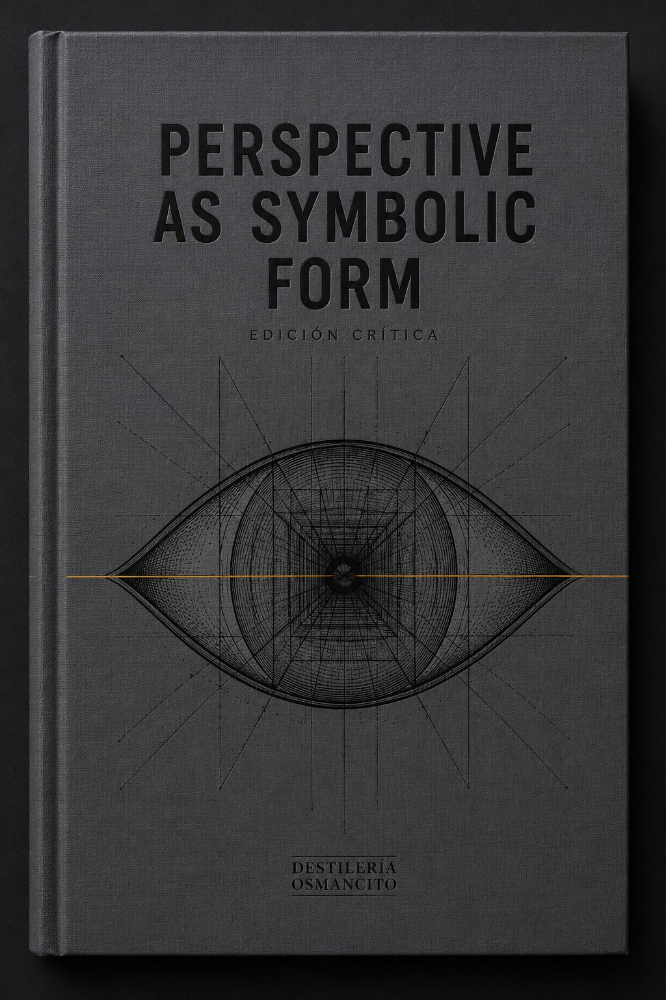

Algo que creía ver desde afuera me estaba viendo desde adentro.
Zona 1: La frase de Dürer al principio. “Perspectiva ist ein lateinisch Wort, bedeutt ein Durchsehung.” Un hombre explicando con sencillez lo que luego el ensayo convertirá en un sistema de proporciones cósmicas. La vitalidad aquí es la de un umbral: algo que todavía no sabe lo que es, nombrándose a sí mismo. Energía de primera vez, de apertura antes del edificio.
Zona 2: La definición del ojo único e inmóvil. El texto dice que la perspectiva central “hace dos suposiciones tácitas pero esenciales: primero, que vemos con un ojo único e inmóvil.” Aquí algo se tensa sin dramatizarse. La vitalidad es la de un acuerdo que ya sabemos falso en el mismo momento en que lo firmamos. La energía de una mentira fecunda.
Zona 3: Paolo Uccello respondiendo a su mujer. “¡Pero qué dulce es la perspectiva!” Una frase de segunda mano, citada de pasada, que sin embargo irrumpe en el ensayo como carne viva entre huesos. Aquí la energía es de desbordamiento: algo que el sistema no puede contener y que sin embargo le da su razón de ser. Un hombre que no puede ir a dormir porque algo en él arde.
Zona 4: La inversión al final — donde la perspectiva “reduce lo divino a mero objeto de la conciencia humana” y, por eso mismo, “expande la conciencia humana en un recipiente de lo divino.” La vitalidad aquí no es dialéctica; es la de algo que gira sobre sí mismo y al girar descubre que tiene dos caras que son la misma cara. Energía de vértigo controlado.
Zona 5: El momento de Lorenzetti — el pavimento de baldosas como primer sistema de coordenadas. La vitalidad es la de un germen que no sabe que es germen. El piso de una pintura del siglo XIV sosteniendo sin saberlo la geometría proyectiva del XVII. Energía de consecuencia diferida, de semilla ciega.
Zona 6: La introducción de Wood sobre “escuchar los subtonos” del ensayo. Antes del ensayo, alguien que describe cómo leer el ensayo. La vitalidad aquí es la del anticuerpo: una lectura que ya lleva inscrita su propia resistencia. Energía de segundo grado, de lectura de la lectura.
El corpus no avanza: asedia.
No va desde un punto A hacia un punto B; rodea algo —una pregunta sobre qué es el espacio cuando lo vemos, qué es el ver cuando lo construimos— y cada sección estrecha el cerco desde un ángulo distinto. La Introducción de Wood llega antes que el ensayo, pero en realidad es el cerco exterior, el más alejado. Panofsky traza los cercos interiores: la antigüedad, el Medievo, el Trecento, Brunelleschi, Desargues.
El movimiento es también estratigráfico: el texto deposita capas. No argumenta en línea, sino que sedimenta. Una afirmación queda cubierta por otra, que la confirma oblicuamente, que la complica sin negarla. Leer este corpus es como descender: lo de arriba no desaparece, sigue ahí, presionando.
Hay además un movimiento que podría llamarse de espejo doblado: cada concepto engendra su contrario y el contrario engendra al primero. La perspectiva objetiva/subjetiva. El sujeto que ve/el sujeto que es visto. El espacio que contiene/el ojo que contiene el espacio. El corpus se mueve como un espejo puesto frente a otro espejo —no produce infinito vacío, sino una profundidad habitada.
Y hay un movimiento menor, casi secreto, que corre por debajo: el movimiento de la concesión. Panofsky concede. Constantemente matiza, añade “aunque,” “sin embargo,” “pero por otro lado.” El ensayo no marcha —cede y avanza. Como alguien que sabe que el terreno cede y camina con cuidado, tocando el suelo antes de apoyar el peso.
Objeto 1: El ojo único e inmóvil — dos palabras
entre paréntesis, peso de plomo.
No hay descripción extendida. Solo la mención de que esta suposición “es
bastante abstracta.” Pero aquí está el agujero negro de todo el sistema:
la perspectiva racional descansa sobre la eliminación de exactamente lo
que hace al ver humano —el temblor, el parpadeo, el movimiento de la
cabeza, el ojo que busca. El peso es el de una fundación que niega la
realidad para poder construir sobre ella. Como una catedral levantada
sobre la declaración de que la tierra es plana.
Objeto 2: Uccello y su mujer — cuatro líneas, peso
de hueso.
La única persona viva en un ensayo de entidades casi abstractas (la
Antigüedad, el Medievo, el Renacimiento, el individuo). Su aparición
tiene el peso de lo que pesa cuando toca suelo: una vida concreta, un
cuerpo que no fue a dormir. El ensayo habla de la “extensión del dominio
del yo” —y aquí está un yo, sin extensión, sin dominio, encendido en la
oscuridad.
Objeto 3: La primera oración de Dürer — media línea,
peso de llave.
“Perspectiva es una palabra latina que significa ‘ver a
través.’” Todo el edificio conceptual que sigue —geometría
proyectiva, simbolismo cultural, filosofía del espacio— estaba ya,
embrionariamente, en ese través. No como anticipo retórico sino como
gravedad semántica: una preposición que lleva siglos de historia
adentro.
Objeto 4: La figura del suelo de baldosas — un
motivo pictórico, peso de bisagra.
Lorenzetti usa un pavimento de baldosas. Es decorativo, es concreto, es
casi un accidente artístico. Y sin embargo: ese pavimento es el primer
sistema de coordenadas, precede en casi tres siglos a la geometría
cartesiana, y contiene en forma de imagen lo que el pensamiento
abstracto tardará generaciones en formalizar. Peso de aquello que no
sabe lo que es.
El corpus lleva, sin saberlo del todo, una pregunta que nunca formula: ¿a quién pertenece lo que vemos?
No es una pregunta sobre propiedad. Es sobre pertenencia en el sentido más hondo: si el espacio que construye la perspectiva es nuestro —en tanto lo producimos, lo habitamos, lo organizamos desde el ojo— o si más bien nos pertenece a nosotros, nos constituye, nos precede como condición. Panofsky describe la historia de la perspectiva como una conquista creciente del sujeto sobre el espacio. Pero lo que el corpus lleva sin decirlo es que esa conquista fue también una capitulación: el sujeto se plegó al espacio para poder nombrarlo suyo. El ojo único e inmóvil —la condición de la racionalización perspectivista— no es el ojo humano. Es el ojo que el sistema necesitaba para existir.
El corpus también lleva el peso de una nostalgia no declarada por el espacio agregado, pre-perspectivista —ese espacio medieval donde los objetos no se organizan desde un punto de vista sino desde su propia presencia. Panofsky describe ese espacio con la objetividad del historiador, pero hay algo en la precisión con que lo describe, en el cuidado de la descripción, que es casi un duelo.
Y lleva, finalmente, algo que pertenece a la categoría de lo que no puede resolverse: si la perspectiva, como “forma simbólica,” expresa un Weltanschauung —si toda representación del espacio es también una representación de cómo pensamos el mundo— entonces estamos atrapados en nuestras propias formas de ver. El ensayo abre esa trampa y la deja abierta.
Este corpus es un animal de sangre fría que piensa en temperatura de herramienta y sueña en temperatura de fuego. Tiene el caparazón de la erudición —citas en latín, escolásticos medievales, constructores de perspectiva por nombre y ciudad— pero por dentro organiza algo que late más fuerte que el argumento: la pregunta de si el modo en que vemos nos revela o nos encarcela. Antes de abrirlo, hay que saber que no concluye lo que promete concluir. Promete una historia de la perspectiva y entrega, sin advertirlo, una meditación sobre qué significa ser el punto desde el que todo converge. Es un texto paciente y, bajo esa paciencia, secretamente desesperado. Quien lo encuentre con la guardia baja del historiador saldrá como historiador; quien lo encuentre con la guardia baja de alguien que alguna vez se ha preguntado qué ve cuando mira, saldrá distinto.
La mirada que viene a buscar un sistema encontrará un sistema, y se irá con él bajo el brazo, sin tocar lo que el corpus realmente tenía para dar.
La mirada que viene a buscar historia del arte encontrará historia del arte impecable —y también, si se distrae un momento de la historia, algo que la historia del arte no sabe muy bien cómo nombrar.
La mirada filosófica encontrará aquí una fenomenología no declarada, una Crítica de la razón visual que Panofsky no llamó así pero construyó así, y que pide ser leída junto a Cassirer, junto a Merleau-Ponty, junto a cualquiera que haya intentado pensar el cuerpo que piensa.
La mirada del artista —del que hace, no del que clasifica— encontrará algo más incómodo: la demostración de que toda decisión formal es también una decisión metafísica, que elegir dónde poner el punto de fuga es elegir qué tipo de sujeto habita el cuadro.
La mirada que llega cansada, sin aparato, encontrará a Uccello despierto en la oscuridad diciendo que la perspectiva es dulce. Y eso, a veces, es suficiente.
Un edificio construido para demostrar algo y que, en el proceso de demostrar, descubre que lo que demuestra es más raro de lo que creía. Pesado sin ser lento. Erudito sin ser clausurado. El corpus llega con el gesto de quien hace una tesis y termina haciendo una confesión —no dramática, casi inadvertida. Lo que produce antes de ser pensado no es información: es la sensación de que el suelo en que uno se para es también una decisión.
Vivo
La paradoja central de la perspectiva como forma doble —objetivante y subjetivante a la vez, distanciadora y absorbente— está en superficie. Panofsky la despliega con claridad y sin ocultarla. Accesible en la primera lectura.
La historia constructiva —de Giotto a Lorenzetti, de Brunelleschi a Desargues, de la Antigüedad al Barroco— es igualmente superficial en el mejor sentido: visible, trazable, documentada. Un itinerario que se puede seguir sin perderse.
La figura de Uccello y su frase están vivas en la superficie: irrumpen, brillan, no piden mediación.
Sepultado
La pregunta sobre la violencia epistemológica de la perspectiva —qué elimina para poder operar, qué niega para poder construir— está en el corpus pero cubierta por el tono celebratorio con que se narra la “conquista” del espacio racional. Requiere destilación: leer en contrapunto con el argumento, contra la dirección del entusiasmo.
La relación entre el Weltanschauung perspectivista y formas contemporáneas de dominio —técnico, colonial, subjetivo— no está nombrada pero está en el corpus como una sombra que cae fuera del marco. Sepultada no por intención sino por época: Panofsky escribe en 1924-27, antes de que ese vocabulario existiera.
El duelo por el espacio agregado medieval —la sensación de pérdida que atraviesa la descripción de lo pre-perspectivista— es sepultado por el aparato académico que lo envuelve. Solo se vuelve legible cuando se deja de leer el argumento y se lee la temperatura de la prosa.
Cerrado
Propuesta, no certeza: El corpus opera sobre una ansiedad no declarada acerca de la unificabilidad del conocimiento —si la historia del arte, la filosofía, la física, la teología y la práctica del taller pueden articularse en un solo sistema sin que algo se rompa. Panofsky lo intenta. La Forma Simbólica de Cassirer es el instrumento. La introducción de Wood señala oblicuamente que el intento tiene fisuras, pero el propio texto de Panofsky lleva esa ansiedad cifrada en cada “podemos prever,” en cada momento en que anticipa la objeción antes de que llegue. El sistema que construye es también la defensa del sistema.
Propuesta, no certeza: Hay algo que podría llamarse soledad del ojo —la perspectiva requiere un observador singular, fijo, sin cuerpo, sin parpadeo. El corpus construye ese ojo como condición formal, pero en el acto de construirlo lo despoja de todo lo que hace humano al ver. Esa operación ocurre en silencio, y su silencio es elocuente.
Ausente
No está la experiencia del que mira el cuadro —el espectador real, encarnado, que se mueve, que se cansa, que vuelve. El corpus habla del ojo abstracto, del sistema, de los pintores. El cuerpo frente a la obra no aparece.
No está la perspectiva no-occidental. La historia que el corpus cuenta es la historia de Europa mirándose a sí misma construir el espacio. Esa ausencia no es un error —es una condición de época. Pero pesa como ausencia.
No está la pregunta por qué hace el espectador con el aparato que el artista construyó. El corpus termina en el sistema, no en el encuentro.
1. Destilación de lo sepultado: la violencia silenciosa del ojo único El sistema entraría a los pasajes donde Panofsky describe las “suposiciones tácitas” de la perspectiva central —el ojo único, inmóvil, sin cuerpo— y desplegaría lo que esas suposiciones implican hacia afuera del texto: qué tipo de sujeto producen, qué tipo de mundo presuponen, qué quedan fuera de lo visible por definición. Resultado: un texto breve que lee el reverso del argumento.
2. Lectura de la temperatura: el duelo por el espacio medieval El sistema releería las secciones I y III buscando no el argumento sino la calidad afectiva de la prosa cuando describe el espacio pre-perspectivista. Qué palabras elige, qué ritmo adopta, dónde la descripción se vuelve más densa de lo necesario. Resultado: una lectura del corpus como texto que lleva un sentimiento que no declara.
3. Apertura de lo cerrado: la ansiedad del sistema El sistema tomaría la introducción de Wood y la leería como diagnóstico retrospectivo de lo que el ensayo de Panofsky no pudo sostener —las fisuras que Wood señala entre iconología, filología y la metáfora totalizante del Weltanschauung. Resultado: una lectura en dos voces, el sistema y su crítica, producida desde el propio corpus.
4. Mapa de lo ausente: el cuerpo que falta El sistema construiría un mapa de lo que el corpus sistemáticamente excluye —el espectador real, el cuerpo, la perspectiva no-europea— y examinaría si esas ausencias son consistentes entre sí o si apuntan a distintas operaciones de exclusión. Resultado: un análisis de la forma del silencio.
5. Síntesis: una poética de la perspectiva Desde todo lo anterior —lo vivo, lo sepultado, lo cerrado, lo ausente— el sistema produciría algo nuevo: no un resumen del corpus sino una proposición propia sobre qué significa que el espacio sea una decisión. En el idioma que el corpus merece, no en el idioma de la crítica. Resultado: un texto que nace del corpus pero no lo parafrasea.
El ensayo lo dice en un paréntesis, casi de pasada: “en verdad estas dos premisas son abstracciones bastante audaces de la realidad.” Las dos premisas son: que vemos con un solo ojo inmóvil, y que el plano que corta la pirámide visual reproduce adecuadamente nuestra imagen óptica.
Panofsky las llama abstracciones. La palabra correcta es amputaciones.
Para que el sistema perspectivista funcione, el cuerpo que mira tiene que ser borrado. No reducido, no simplificado: borrado. El ojo único e inmóvil no es una idealización del ojo humano —es su negación. El ojo humano tiembla. Parpadea. Se mueve constantemente en microoscilaciones que el sistema nervioso central convierte, con esfuerzo, en la ilusión de estabilidad que llamamos “ver.” Los dos ojos producen disparidad binocular, que el cerebro traduce en profundidad. La cabeza gira. El cuerpo se desplaza. La percepción no es un punto: es una trayectoria.
La perspectiva central requiere que nada de esto ocurra.
Lo que el sistema produce no es, entonces, una representación del espacio tal como lo vemos. Es una representación del espacio tal como un ser sin cuerpo lo vería si pudiera ver. Un ojo puro. Un ojo que no necesita parpadear porque no puede secarse. Un ojo que no se mueve porque no tiene órbita, no tiene músculo, no tiene fatiga. Un ojo que es, en todos los sentidos que importan, un ojo muerto.
Y sobre ese ojo muerto se construye la “objetividad” del espacio perspectivista. La racionalización del espacio —el gran logro que Panofsky celebra como conquista del sujeto moderno sobre la dispersión medieval— descansa en la eliminación del sujeto como condición de posibilidad. Para que el espacio sea racional, el que lo ve no puede ser real.
Esto no es una contradicción que el ensayo resuelve. Es una contradicción que el ensayo celebra sin verla.
Hay algo más. Panofsky anota que el espacio perspectivista es “infinito, invariable y homogéneo.” Esas tres cualidades son también las del espacio absoluto newtoniano, y también —no es casualidad— las de los mercados abstractos de la economía política clásica, las de los sujetos de derecho en la teoría jurídica liberal, las de los átomos en la física mecanicista del XVII. El ojo único e inmóvil no es solo una suposición técnica de la pintura renacentista. Es el prototipo de un modo de conocimiento que necesita que el observador no tenga cuerpo, posición, historia ni interés para que el conocimiento valga. La epistemología de la perspectiva es la epistemología de la objetividad moderna. El problema de la perspectiva es el problema de toda ciencia que imagina que el sujeto puede salir de su propio marco para ver el mundo desde ninguna parte.
El ensayo de Panofsky documenta esa construcción con precisión impecable. No advierte que la está haciendo.
Cuando Panofsky describe el espacio perspectivista —el gran logro renacentista, el sistema que “conquista” la representación del espacio— la prosa es precisa, técnica, casi notarial. Vértices, coordenadas, puntos de fuga, proporciones. El ensayo trabaja.
Cuando Panofsky describe el espacio medieval —el espacio “agregado,” el espacio que no es sistemático sino acumulativo, donde cada objeto irradia su propia presencia en lugar de ocupar una posición en una cuadrícula común— la prosa cambia de temperatura.
No dramáticamente. No de manera que interrumpa la argumentación. Pero el cambio está ahí, y es consistente.
El espacio medieval se describe con palabras que tienen tacto: “cada objeto irradiaba su propio espacio local,” “la relación entre el cuerpo y el espacio circundante no había sido aún fijada en una unidad matemática.” Ese “aún” es revelador —es el “aún” del argumento teleológico, que señala hacia lo que falta. Pero la frase que lo contiene es casi tierna. No había sido fijada. Como si la no-fijación fuera una condición de libertad, antes de que el argumento obligue a presentarla como una limitación.
En la sección sobre el espacio antiguo —también pre-sistemático, también “impresionista” pero de un impresionismo que Panofsky llama “cuasi”— hay un momento en que describe la visión periférica, la curva de la retina, el campo visual esférico que la perspectiva plana forzosamente deforma. El pasaje es técnico. Pero tiene una densidad que no es del argumento: es la densidad de algo que se está nombrando para poder perderlo.
Hay una frase que el corpus no contiene pero que los pasajes medievales llevan dentro como una nota que suena debajo de las demás: esto era también un modo. No incompleto. No error. Un modo de ver, que organizaba el mundo según una lógica distinta —la lógica de la presencia singular en lugar de la posición relativa, la lógica de lo que pesa en lugar de lo que mide.
Panofsky no dice que lo lamenta. No podría. Su argumento es teleológico: la historia de la perspectiva va de la confusión a la claridad, de lo agregado a lo sistemático, de lo local a lo universal. Ese es el argumento. Pero la prosa, en los pasajes medievales, hace algo que el argumento no puede hacer: se detiene. Describe con más detalle del necesario. Vuelve sobre los mismos ejemplos —el mosaico del Baptisterio, los interiores de Giotto, las baldosas de Lorenzetti— con la fidelidad de quien no termina de irse.
No es nostalgia consciente. Es la temperatura del duelo que no se declara.
Esto es una propuesta de lectura, no una certeza.
La introducción de Christopher Wood hace una cosa que las introducciones raramente hacen: no prepara al lector para el ensayo que sigue, sino que lo pone en guardia. Describe el proyecto de Panofsky con admiración y con precisión, y en el mismo gesto —sin subrayarlo, sin dramatizarlo— señala dónde el proyecto se fractura.
Las fracturas son dos.
Primera fractura: la sincronía nunca cuadra.
Wood lo dice así: “La sincronía nunca es mejor que aproximada.” Panofsky coordina la historia del arte con la historia intelectual: la perspectiva central corresponde a Descartes, la geometría proyectiva de Desargues corresponde al espacio infinito de la física moderna. Pero las fechas no encajan. Alberti viene antes que Descartes. Lorenzetti viene antes que Newton. El sistema que Panofsky construye —la Forma Simbólica como articulación entre el Kunstwollen y el Weltanschauung de una época— requiere que el arte y el pensamiento se muevan juntos, que expresen la misma estructura profunda. Pero no se mueven juntos. Uno llega antes. El otro recupera el atraso. La coordinación es real pero nunca perfecta, y esa imperfección tiene consecuencias: si la sincronía es aproximada, la Forma Simbólica no es una ley sino una metáfora.
El ensayo de Panofsky no aborda este problema. Cuando las fechas no cuadran, avanza. “Podemos prever,” dice en varios momentos. “No es casual que.” La confianza del tono suprime la pregunta que los datos abren.
Segunda fractura: la Forma Simbólica puede probar cualquier cosa.
Si toda expresión de una época —su arte, su filosofía, su ciencia, su teología— es manifestación de la misma estructura profunda, entonces cualquier cosa puede coordinarse con cualquier cosa con la suficiente habilidad hermenéutica. El método no tiene un criterio de refutación. Panofsky puede decir que el espacio perspectivista corresponde a la filosofía cartesiana; pero también podría haberlo coordinado con la teología protestante, o con la economía mercantilista, o con la cartografía colonial. El instrumento es potente precisamente porque no tiene límite interno.
Wood no lo llama así. Pero cuando describe la “restricción filológica deliberada” de Riegl —la negativa de Riegl a coordinar arte con Weltanschauung, que Panofsky criticó como cobardía intelectual— el texto de Wood hace legible lo que esa restricción protegía: la honestidad de no decir más de lo que los datos permiten.
Panofsky dice más. El sistema dice todo. Y un sistema que lo dice todo, que encuentra la forma simbólica de toda época en toda obra de toda época, es un sistema que en realidad no ha encontrado nada —o que ha encontrado lo que siempre buscó.
Lo que el corpus lleva cerrado es esta pregunta: ¿y si el ensayo de Panofsky es también una Forma Simbólica? ¿La forma simbólica del pensamiento de Weimar —de su necesidad de totalidad, de su deseo de que la historia tenga sentido, de su resistencia al relativismo en el momento en que el suelo histórico se volvía más incierto? La sincronía aproximada que el método no puede sostener como ley quizás se sostiene como síntoma. No de un error sino de una necesidad. La ansiedad del sistema es la ansiedad de quien construye orden en el momento en que el desorden es más amenazante.
Esto el corpus no lo dice. Pero lo lleva.
Ausencia 1: el espectador encarnado
El corpus construye sistemáticamente un observador sin cuerpo. El “ojo único e inmóvil” no es solo una suposición técnica: es la condición de posibilidad de todo el aparato. Pero el espectador real —el que está de pie frente al fresco, que se cansa, que da un paso atrás, que vuelve, que mira de costado porque la luz cambia— no aparece en ningún momento. El cuerpo que recibe la imagen es tan ausente como el cuerpo que el sistema perspectivista finge que no existe. Esta ausencia no es accidental: es estructural. El corpus habla del productor del sistema (el pintor, el geómetra) y del sistema mismo, pero el encuentro entre la obra terminada y el ser humano que la habita con sus ojos reales queda fuera del marco.
Ausencia 2: la perspectiva como tecnología de poder
El corpus describe la perspectiva como una conquista epistemológica: el sujeto moderno racionalizando el espacio, extendiéndose sobre el mundo. Lo que no aparece es la pregunta por quién es ese sujeto y qué hace con esa extensión. La perspectiva central fue también la tecnología de la cartografía colonial, del catastro fiscal, de la planificación urbana como instrumento de control. El ojo único e inmóvil fue también el ojo del Estado moderno mirando su territorio. Esta ausencia en Panofsky no es únicamente de época —hay contemporáneos suyos que ya hacían esas preguntas— sino de escala: el ensayo opera en el nivel del espíritu de la época y no puede, desde ahí, ver las aplicaciones concretas del sistema que describe.
Ausencia 3: otras perspectivas
El corpus es la historia de Europa mirándose construir el espacio. La perspectiva isométrica china, la perspectiva inversa del icono bizantino, los sistemas de representación espacial islámicos —están ausentes no como omisiones conscientes sino como no-objeto: el marco de referencia del ensayo los vuelve invisibles por definición. Para Panofsky, hay una historia de la representación del espacio y esa historia va de la Antigüedad griega al Renacimiento italiano. Lo que no cabe en esa línea no es un caso alternativo: es un error, un retraso, o simplemente no existe dentro del argumento. Esta ausencia es la más estructural de las tres: no es lo que el corpus no encontró sino lo que el corpus no podía buscar.
Coherencia de las ausencias
Las tres ausencias no son independientes. Apuntan a la misma operación: el borrado del cuerpo particular —el cuerpo que tiene posición, historia, fatiga, cultura— como condición de la objetividad del sistema. El espectador sin cuerpo, el sistema sin política, la historia sin geografía alternativa: son tres formas de la misma sustracción. Lo que el corpus produce como conquista —la racionalización del espacio, la universalización del punto de vista— requiere esa triple sustracción como costo invisible. El mapa de lo ausente es también el mapa de lo que el sistema costó.
Cuando decides dónde poner el punto de fuga, estás decidiendo quién eres.
No metafóricamente. En el sentido técnico más preciso: el punto de fuga es el lugar hacia el que todo converge desde el lugar donde tú estás. Cada línea del cuadro que apunta hacia ese punto apunta también hacia atrás, hacia el ojo que lo organiza. El sistema perspectivista construye el espacio y en el mismo gesto construye el sujeto que lo ve. No primero uno y luego el otro: simultáneamente, como dos caras de una misma operación.
Esto es lo que hace de la perspectiva algo más que una técnica. Es una proposición metafísica pintada en el muro: el mundo es lo que se ve desde donde estoy. Y lo que se ve desde donde estoy tiene la forma de lo que soy capaz de ver.
El problema es el siguiente. Para que esa proposición funcione, para que el sistema sea coherente y el espacio sea “racional,” el ojo que lo organiza tiene que dejar de ser un ojo real. Tiene que ser fijo, único, sin parpadeo, sin cuerpo, sin desplazamiento. El sujeto que la perspectiva construye en el acto de construir el espacio es un sujeto que no existe. O que solo existe en la medida en que niega lo que tiene de humano: el temblor, la binocularidad, el movimiento, el cansancio, el ángulo.
Aquí está la paradoja que el corpus de Panofsky describe sin nombrar: la perspectiva es la gran conquista del sujeto moderno, el momento en que el yo se pone en el centro del espacio y organiza el mundo desde sí mismo. Y sin embargo, para estar en ese centro, el yo tiene que vaciarse. Tiene que convertirse en el punto geométrico que la matemática necesita. Tiene que ser, en el sentido más preciso, nadie.
El espacio perspectivista es el espacio de un sujeto imposible. Infinito, homogéneo, racional —y habitado por un ojo que no puede existir.
Lo que sobrevive de eso, lo que permanece cuando se cierra el libro, no es el sistema. Es Uccello, despierto en la oscuridad, diciéndole a su mujer que la perspectiva es dulce. Un hombre de carne que no puede dormir porque algo en él arde. No el ojo único e inmóvil. El ojo que no puede cerrar.
Quizás ahí está lo que el sistema no pudo eliminar: que quien mira, tiembla. Que el espacio que construimos lleva adentro la vibración del cuerpo que lo construye. Que la perspectiva más fiel a lo que somos no es la que finge que estamos quietos, sino la que registra el movimiento inevitable de quien, al mirar, ya se está moviendo hacia lo que mira.
El punto de fuga no es el lugar hacia donde converge el mundo. Es el lugar donde el mundo y el ojo que lo mira se encuentran. Y ese encuentro nunca ocurre en reposo.
Un libro que pesa más de lo que mide, con el tacto frío de algo que fue construido para durar y que sabe que dura.
Llega con la densidad de quien ha pensado mucho antes de hablar. No invita: espera. Su superficie es la de la erudición sin ornamento —austera, casi áspera— pero por dentro algo arde con la fuerza silenciosa de una pregunta que el libro no formula porque la da por resuelta y que sin embargo no lo está.
Título — Perspective as Symbolic Form
Autor — Erwin Panofsky (con introducción de Christopher
S. Wood)
Año — 1927 (ensayo original); 1991 (edición inglesa con
introducción de Wood)
Género — Ensayo de historia y teoría del arte
Extensión estimada — 18 700 palabras (edición con
introducción)
Idioma original — Alemán (Die Perspektive als
“symbolische Form”)
Palabra más frecuente con contenido — space
(182 ocurrencias). El corpus declara ser sobre perspectiva (102
ocurrencias); la palabra que trabaja con mayor constancia es espacio. La
perspectiva es el método; el espacio es la pregunta.
Ratio — 18 700 palabras de corpus / ~5 800 palabras de
análisis acumulado ≈ 3×
Panofsky argumenta que la perspectiva central del Renacimiento no es una técnica neutral de representación sino una “forma simbólica” —en el sentido de Cassirer— que expresa y constituye la visión del mundo de la modernidad europea. A través de la historia de la representación del espacio desde la Antigüedad hasta el Barroco, el ensayo traza el arco de una conquista: la progresiva racionalización del espacio visual en un sistema matemático infinito, homogéneo y centrado en el sujeto. La introducción de Wood, escrita seis décadas después, asedia ese argumento con simpatía y con precisión, señalando las fisuras entre la ambición totalizante del método y las exigencias de la filología.
Erwin Panofsky — historiador del arte alemán,
fundador de la iconología, autor del ensayo central.
Christopher S. Wood — historiador del arte, autor de la
introducción crítica a la edición inglesa de 1991.
Ernst Cassirer — filósofo neokantiano; su concepto de
“forma simbólica” provee el instrumento teórico del ensayo.
Alois Riegl — historiador del arte austriaco; su
concepto de Kunstwollen es el antecedente metodológico
directo.
Paolo Uccello — pintor florentino del siglo XV; aparece
como figura viva, el hombre que no podía dormir por amor a la
perspectiva.
Ambrogio Lorenzetti — pintor sienés del Trecento; su
Anunciación de 1344 marca el primer sistema de coordenadas
perspectivistas.
Filippo Brunelleschi — arquitecto florentino; su
experimento con el espejo establece la perspectiva central como sistema
practicable.
El ensayo parte de una distinción: la perspectiva no es una representación fiel de lo que vemos sino una construcción que requiere dos suposiciones “abstractas” —un ojo único e inmóvil, y un plano que equivale a la imagen óptica. Sobre esa base construida, no natural, se erige todo el sistema de la perspectiva central. El espacio antiguo era “agregado”: cada objeto irradiaba su propio espacio local, sin coordinación geométrica común. El espacio medieval representó un retroceso formal necesario —la disolución de los vínculos espaciales antiguos— que preparó la síntesis posterior. El Trecento italiano, con Giotto y Duccio, produce los primeros interiores cerrados y coherentes; los Lorenzetti añaden el primer pavimento con punto de fuga único, con conciencia matemática plena. Brunelleschi y Alberti sistematizan ese hallazgo en el siglo XV: la costruzione legittima como método reproducible. El Barroco lleva el sistema a su límite: el espacio perspectivista se vuelve infinito y la posición del sujeto, arbitraria. La perspectiva es así la “forma simbólica” de la modernidad: la expresión en imagen de un mundo racionalizado, homogéneo e infinito, centrado en un sujeto que ha puesto el ojo en el origen de todas las coordenadas.
La conquista que vacía al conquistador. El ensayo celebra la perspectiva como la gran extensión del sujeto moderno sobre el espacio. Pero el sistema que produce esa extensión requiere que el sujeto deje de ser real: el ojo único e inmóvil es la negación del ojo humano. La modernidad gana el espacio y pierde el cuerpo que lo habitaba.
El sistema que no puede fallar. La Forma Simbólica como método puede coordinar cualquier expresión artística con cualquier Weltanschauung con suficiente habilidad hermenéutica. Un instrumento sin criterio de refutación no es una ley: es una metáfora. El ensayo nunca enfrenta esta posibilidad; Wood la ronda sin nombrarla del todo.
El progreso que lleva un duelo. La historia que el ensayo cuenta es teleológica —de lo agregado a lo sistemático, de lo local a lo universal. Pero la prosa, en los pasajes medievales, baja de temperatura y se vuelve más densa de lo necesario. El argumento avanza; algo en el texto no termina de irse.
El ojo que borra el ojo
El producto de la Destilería como libro físico cerrado, visto frontalmente,
encuadernación de tela gris pizarra con relieve en seco. Cubierta con
tipografía que lleva: PERSPECTIVE AS SYMBOLIC FORM en posición dominante,
centrado, tipografía romana de palo seco / DESTILERÍA OSMANCITO como sello
editorial en pie de cubierta, pequeño / subtítulo EDICIÓN CRÍTICA en versales
finas bajo el título principal. Elemento visual en cubierta: un único ojo
geométrico —pupila como punto de fuga, iris como convergencia de líneas
ortogonales— que mira pero que es también el punto hacia donde todo converge;
el ojo que organiza el mundo es el mismo ojo que desaparece en él. Superficie
fría, mate, sin brillo. Paleta: gris pizarra, negro profundo, una sola línea
en ocre antiguo que cruza el ojo. Ilustración editorial de alta factura,
grabado en talla dulce. Sin fotorrealismo. Relación de aspecto 2:3.El libro en el estante
El lomo solo del producto de la Destilería, en un estante entre volúmenes
de distintas épocas —algunos más anchos, algunos más delgados, ninguno
identificable. El lomo lleva: PERSPECTIVE AS SYMBOLIC FORM en vertical /
DESTILERÍA OSMANCITO en horizontal en el pie / un fino trazo de líneas
convergentes en el extremo superior como única ornamentación. El estante
es de madera oscura con pátina; los volúmenes vecinos tienen colores apagados
—verdes musgo, burdeos, crema envejecida. La luz viene lateral, como de
ventana alta, y crea una sombra que hace al libro más presente que sus vecinos
sin que nada lo señale. Paleta: madera oscura, ocres apagados, gris pizarra
del lomo. Ilustración en gouache de factura editorial. Sin fotorrealismo.
Relación de aspecto 2:3.La apertura que revela
El producto de la Destilería abierto en ángulo de 90 grados, visto desde
arriba en ligero contrapicado. La página izquierda muestra solo texto denso
con notas marginales manuscritas en tinta fina; la página derecha muestra
una única figura: un diagrama de pirámide visual con el ojo en el vértice
izquierdo y el plano de proyección a la derecha, pero el ojo ha sido tachado
con una sola línea diagonal limpia —el único gesto editorial que interrumpe
el sistema. Cubierta visible en el extremo: PERSPECTIVE AS SYMBOLIC FORM /
DESTILERÍA OSMANCITO. La superficie donde descansa el libro es mármol frío,
gris con vetas blancas. Paleta: blanco papel, negro tinta, gris mármol, ocre
antiguo de las anotaciones. Acuarela de precisión editorial. Sin fotorrealismo.
Relación de aspecto 2:3.El pavimento sin término
Un pavimento de baldosas en perspectiva central —las líneas convergen hacia
un punto de fuga que está justo fuera del borde superior del cuadro, nunca
visible. Las baldosas son de piedra calcárea desgastada, blancas y grises
alternadas, con juntas oscuras. El pavimento no tiene paredes, no tiene techo:
termina en niebla a los lados y en ese punto de fuga invisible arriba. No hay
nadie. La ausencia no es perturbadora —es la condición del sistema. Una sola
baldosa en primer plano tiene una grieta diagonal que rompe la geometría sin
anularla. Paleta: piedra blanca, gris húmedo, negro de las juntas, niebla
azul muy fría al fondo. En la esquina inferior, etiqueta discreta: DESTILERÍA
OSMANCITO · PERSPECTIVE AS SYMBOLIC FORM · PANOFSKY. Grabado en aguafuerte
con aguatinta. Sin fotorrealismo. Relación de aspecto 2:3.La vela que no se apaga
Una mesa de trabajo en penumbra —noche, siglo XV, Florencia o Siena,
sin especificar. Sobre la mesa: instrumentos de geometría (compás, regla,
escuadra) dispuestos con precisión, y una vela encendida cuya llama se
inclina levemente aunque no hay corriente de aire visible. La llama es el
único elemento en movimiento en una composición de perfecta quietud
geométrica. No hay figura humana, pero hay una silla ligeramente apartada
de la mesa —alguien acaba de levantarse o está a punto de sentarse. Paleta:
negro profundo, ocre cálido de la vela, gris frío de los instrumentos,
blanco amarillento del papel sobre la mesa. En la esquina inferior, etiqueta
discreta: DESTILERÍA OSMANCITO · PERSPECTIVE AS SYMBOLIC FORM · PANOFSKY.
Óleo de interior flamenco, luz de vela. Sin fotorrealismo. Relación de
aspecto 2:3.El espejo que no devuelve
Un espejo circular convexo —el tipo que Brunelleschi usó en su experimento
fundacional— colgado sobre una pared de piedra desnuda. El espejo refleja
una arquitectura: arcos, columnas, un patio que en la pared frente a él no
existe. El reflejo es perfectamente nítido; la pared, perfectamente vacía.
La tensión es que el espejo muestra un mundo más real que el que lo rodea,
o que muestra el único mundo posible: el que se construye desde el ojo que
lo mira. Paleta: gris piedra, plata del espejo, azul frío del cielo reflejado
que no existe, ocre de los arcos imaginarios. En la esquina inferior, etiqueta
discreta: DESTILERÍA OSMANCITO · PERSPECTIVE AS SYMBOLIC FORM · PANOFSKY.
Gouache sobre papel gris, factura flamenca. Sin fotorrealismo. Relación de
aspecto 2:3.Núcleo Wood no introduce el ensayo de Panofsky: lo asedia. Reconstruye el andamiaje intelectual que lo sostuvo —Riegl, Cassirer, el neo-kantismo de Weimar— y señala con precisión quirúrgica los puntos donde el andamiaje cede. Lo que pasa aquí es que un texto del presente lee un texto del pasado y descubre que ese pasado no estaba tan seguro de sí mismo como aparentaba. El peso: sin la introducción de Wood, el ensayo de Panofsky es una catedral. Con ella, es una catedral con fisuras visibles —y las fisuras son lo más interesante.
Hallazgos
Mesoscópico — “To listen to the voice of the perspective essay again, to attend to its undertones, is a project of more than merely biographical interest.” Una frase que declara su propio método: escuchar los subtonos, no el argumento. Y al declararla, Wood produce exactamente eso —una lectura que opera por debajo del texto que lee.
Microscópico — “Riegl’s visionary synchronic Weltanschauungsphilosophie, tempered by a certain deliberate philological myopia.” El adjetivo deliberate es el mecanismo. No dice que Riegl fuera ciego: dice que eligió serlo. La miopía como estrategia de rigor, no como limitación. Una palabra que invierte el juicio de valor sin cambiarlo.
Mesoscópico — “Panofsky was unwilling to perceive a divergence of symbolic systems, to suffer a culture with ‘faults.’” El verbo suffer no es tolerancia: es resistencia activa al desorden. Panofsky no pudo soportar —en el sentido físico del peso— una cultura que no se articulara en unidad. Lo que el argumento presenta como ambición es también, aquí, una incapacidad.
Microscópico — “What it tells us about a culture is usually tautological (something like: this was the kind of culture that could have produced this work).” El paréntesis es el mecanismo. Lo que Wood pone entre paréntesis debería ser el colapso del método iconológico completo. Que lo diga sin paréntesis sería una acusación; con paréntesis, es un diagnóstico que el lector puede no ver si parpadea.
Macroscópico — La introducción de Wood está construida para no preceder sino para rodear. Al colocarse antes del ensayo, obliga al lector a leer a Panofsky con los oídos de Wood ya activos. Es una operación editorial que convierte la secuencia temporal (Wood escribe 64 años después) en una secuencia de lectura (Wood llega primero). El texto de Panofsky queda así enmarcado —no comentado, sino contenido— en una mirada que ya sabe sus límites. Es la única parte del corpus donde el contexto se vuelve estructura.
Núcleo Panofsky construye el sistema de la perspectiva central con la precisión de un ingeniero, y en el mismo gesto —sin detenerse— enumera todo lo que ese sistema requiere negar para funcionar. Lo que pasa aquí es la demostración más honesta del corpus: el argumento no oculta sus supuestos, los declara, y luego avanza como si la declaración los resolviera. El peso: la honestidad de nombrar el costo sin pagar el precio.
Hallazgos
Mesoscópico — “‘Item Perspectiva ist ein lateinisch Wort, bedeutt ein Durchsehung.’” Dürer explicando con sencillez de escolar lo que el ensayo convertirá en arquitectura conceptual. La frase funciona sola porque lleva adentro el asombro puro de quien nombra algo por primera vez: ver a través. Todo el edificio que sigue estaba ya en esa preposición.
Microscópico — “In order to guarantee a fully rational – that is, infinite, unchanging and homogeneous – space, this ‘central perspective’ makes two tacit but essential assumptions.” El par tacit but essential es el mecanismo. Tácito: no se dice. Esencial: no puede no estar. Dos adjetivos en tensión que describen exactamente la operación que el ensayo realiza sobre sus propios fundamentos —los lleva sin nombrarlos, y aquí los nombra por única vez.
Mesoscópico — “It forgets that we see not with a single fixed eye but with two constantly moving eyes, resulting in a spheroidal field of vision.” El sujeto gramatical es el sistema —it forgets. No el pintor, no el teórico: el sistema mismo olvida. Panofsky le atribuye al método la capacidad de olvidar, lo que convierte la perspectiva en un agente que actúa sobre la realidad en lugar de representarla.
Microscópico — “Crack that nut, you artists!” —Wilhelm Schickhardt, citado por Panofsky. La única frase del corpus en modo imperativo dirigida a los artistas. Irrumpe en la prosa académica como una interpelación directa desde el siglo XVII. Su función en el argumento es técnica; su efecto es el de algo vivo que golpea el vidrio del sistema desde adentro.
Macroscópico — La sección I está construida sobre un movimiento de concesión permanente: afirmación, calificación, excepción, extensión. Panofsky construye el sistema y simultáneamente registra todo lo que el sistema no es. No refuta —registra. El resultado es un edificio cuya arquitectura incluye sus propias grietas como elementos decorativos. Solo al final de la sección se vuelve claro que las grietas no eran decorativas: eran la pregunta.
Núcleo Panofsky demuestra que la Antigüedad no llegó a la perspectiva central no por incapacidad sino por coherencia: su óptica, fundada en el axioma del ángulo, era más fiel a la visión real que la perspectiva renacentista. Lo que pasa aquí es el momento más inquietante del ensayo: el sistema que el corpus celebra como conquista se revela como una ruptura con un conocimiento más preciso. El peso: la perspectiva central no supera a la Antigüedad —la elige frente a ella, y esa elección requirió suprimir a Euclides.
Hallazgos
Mesoscópico — “In Renaissance paraphrases of Euclid, indeed even in translations, precisely this Eighth Theorem was either entirely suppressed or ‘emended’ until it lost its original meaning.” La palabra emended entre comillas es el mecanismo. Corregir un texto antiguo hasta que deje de significar lo que significaba: la operación que el Renacimiento hizo con Euclides para poder construir su sistema. El argumento lo llama necesidad histórica. Las comillas lo llaman falsificación.
Microscópico — “The represented space remains an aggregate space; it never becomes that which modernity demands and realizes, a systematic space.” El verbo demands aplicado a la modernidad como sujeto. No es que la modernidad produjera el espacio sistemático: lo exigió. Una demanda es un imperativo que viene de afuera. Panofsky escribe como si la modernidad fuera un agente con apetitos propios —lo cual, sin que él lo nombre, convierte la historia del arte en política.
Macroscópico — La sección II construye un movimiento que solo se percibe al final: Panofsky describe el espacio antiguo con una precisión que excede lo necesario para el argumento. El impresionismo antiguo, el axioma del ángulo, la esfera como campo visual —todo esto podría haberse resumido en la mitad del espacio. La extensión de la descripción tiene la temperatura de algo que se describe para poder perderse. La sección II es el duelo más largo del corpus.
Núcleo La sección más larga y más densa. Panofsky traza el arco completo desde el espacio medieval hasta la costruzione legittima de Brunelleschi y Alberti, pasando por Giotto, Duccio y los Lorenzetti. Lo que pasa aquí es el corazón mecánico del ensayo: la demostración de que el sistema perspectivista no fue una invención sino una acumulación de decisiones pequeñas tomadas sin saber del todo adónde llevaban. El peso: la historia del arte como consecuencia diferida —cada gesto preparando el siguiente sin verlo.
Hallazgos
Mesoscópico — “The discovery of the vanishing point, as ‘the image of the infinitely distant points of all the orthogonals,’ is, in a sense, the concrete symbol for the discovery of the infinite itself.” El punto de fuga como símbolo del infinito: no lo que representa, sino lo que es. Panofsky condensa aquí la tesis entera del corpus en una frase que funciona sola porque produce el vértigo que describe.
Microscópico — “The spatial system of mature Trecento art was constructed retroactively, as it were, out of its elements.” El adverbio retroactively en combinación con as it were es el mecanismo más preciso del corpus. Retroactivamente: el sistema solo se hizo sistema cuando ya estaba hecho. As it were: la prudencia del historiador que sabe que está proyectando hacia atrás. Los dos juntos producen una honestidad metodológica que el resto del ensayo no siempre sostiene.
Mesoscópico — “But how sweet perspective is!” —Paolo Uccello, citado de segunda mano. Cuatro palabras que interrumpen el sistema completo. La única emoción no analítica del ensayo de Panofsky. Funciona sola porque es la única voz que no explica —solo siente. Y lo que siente no es la utilidad de la perspectiva sino su dulzura: una cualidad que el sistema no puede producir y que sin embargo produce.
Microscópico — “When work on certain artistic problems has advanced so far that further work in the same direction, proceeding from the same premises, appears unlikely to bear fruit, the result is often a great recoil.” La frase de apertura de la sección III es una ley de la historia del arte formulada con la precisión de una ley física. Recoil: el retroceso como condición del avance. El término viene de la mecánica —el retroceso del arma que dispara. Que Panofsky lo use para el arte medieval es una decisión que transforma el “retroceso” en fuerza productiva.
Macroscópico — La sección III opera como una serie de ampliaciones sucesivas: cada figura (Duccio, Giotto, los Lorenzetti, Brunelleschi, Alberti) ocupa más espacio que la anterior, y la densidad del análisis aumenta con la proximidad al sistema completo. Es una estructura narrativa —el crescendo— aplicada a la historia del arte. Pero en el centro del crescendo, casi enterrado entre los análisis técnicos de pavimentos y cornisas, está Lorenzetti: el pintor que sin saberlo encontró el punto de fuga. La ignorancia de Lorenzetti sobre lo que estaba haciendo es el momento más vivo de la sección —y el ensayo lo menciona de pasada.
Núcleo La sección más corta y más densa por densidad de proposiciones. Panofsky abandona la historia y produce teoría pura: la perspectiva como instrumento de doble filo, como forma que objetiva y subjetiviza simultáneamente, como condición de lo religioso moderno. Lo que pasa aquí es la formulación más comprimida de la tesis del corpus —y la apertura de una pregunta que el ensayo no responde porque no puede.
Hallazgos
Mesoscópico — “The history of perspective may be understood with equal justice as a triumph of the distancing and objectifying sense of the real, and as a triumph of the distance-denying human struggle for control; it is as much a consolidation of the external world as an extension of the domain of the self.” La frase más perfectamente simétrica del corpus. Funciona sola porque su estructura formal es la demostración de lo que dice: una balanza perfecta donde cada peso es idéntico al peso opuesto. El lector no puede inclinarse hacia ningún lado —que es exactamente el problema que Panofsky describe.
Microscópico — “Perspective, in transforming the ousia (reality) into the phainomenon (appearance), seems to reduce the divine to a mere subject matter for human consciousness; but for that very reason, conversely, it expands human consciousness into a vessel for the divine.” El but for that very reason es el mecanismo. No however, no nevertheless, no on the other hand: sino por esa misma razón. La reducción y la expansión no son contrarias —son la misma operación. Panofsky lo dice con la locución más pequeña posible.
Mesoscópico — “It is thus no accident if this perspectival view of space has already succeeded twice in the course of the evolution of art: the first time as the sign of an ending, when antique theocracy crumbled; the second time as the sign of a beginning, when modern ‘anthropocracy’ first reared itself.” La última frase del ensayo. Funciona sola porque cierra la historia sin cerrar la pregunta: si ocurrió dos veces, puede ocurrir una tercera. La perspectiva como fenómeno cíclico —no como conquista definitiva sino como síntoma recurrente de una crisis específica entre el hombre y su dios.
Macroscópico — La sección IV no concluye el ensayo: lo abre. Cada una de las proposiciones de esta sección —la perspectiva como espada de doble filo, la ousia convertida en phainomenon, la antropocracia— es el inicio de un ensayo distinto que Panofsky no escribe. La brevedad de la sección IV, después de la extensión de la III, no es un cierre: es un umbral. El corpus termina donde empieza la pregunta que producía.
Dónde vive la densidad real En la Sección III y en la introducción de Wood. Pero densidades distintas: la de Wood es conceptual, la de la Sección III es acumulativa. El corpus es más denso donde trabaja más despacio.
Dónde trabaja más En la Sección I, donde el sistema y su costo coexisten sin resolverse. Es el único lugar del corpus donde Panofsky sostiene simultáneamente dos verdades incompatibles —la perspectiva como conquista y como abstracción violenta de lo real— sin inclinar la balanza hacia ningún lado.
Dónde respira o cede En los pasajes de transición entre secciones, donde Panofsky recapitula antes de avanzar. Y en los momentos narrativos —Uccello, Lorenzetti, Schickhardt— donde el sistema para para dejar pasar a alguien vivo.
Las fuerzas que lo mantienen en movimiento La tensión entre el rigor filológico (lo que los datos permiten decir) y la ambición totalizante (lo que el sistema necesita que los datos digan). Cada vez que el corpus avanza, es porque la segunda fuerza ha ganado provisionalmente. Cada vez que el corpus cede, es porque la primera exige su derecho.
Lo que el corpus bordea sin entrar La pregunta de quién paga el costo del ojo único e inmóvil. La perspectiva como tecnología de poder —de Estado, de Imperio, de control del territorio. El cuerpo real del espectador. Cualquier sistema de representación espacial fuera de Europa. El corpus bordea todo esto con la precisión de quien conoce el borde y elige no cruzarlo.
Leer este corpus es como examinar una catedral desde el andamio. No se ve el edificio completo —se ven las piedras, las juntas, los puntos donde la argamasa es más gruesa de lo necesario. La temperatura es fría y constante, con irrupciones locales de calor —Uccello, Schickhardt, la última frase de la Sección IV— que duran exactamente lo que dura la cita y luego desaparecen. Deja la sensación de haber entendido algo que no existía antes de leerlo y que ahora no se puede desaprender. Envejece bien: las fisuras que Wood señala en 1991 no debilitan el edificio —lo hacen más interesante. Es un corpus que pide ser releído desde el final hacia el principio, porque la última frase de la Sección IV cambia retroactivamente el sentido de la primera frase de la Sección I.
Este corpus construye un sistema para ver. Lo construye con tal minucia y tal confianza que el lector tarda en advertir que el sistema también ve al lector —que la perspectiva no es solo el objeto del análisis sino su condición invisible. Lo más revelador aquí no está en las tesis: está en lo que el argumento necesita que no se pregunte para poder avanzar. En los bordes. En los silencios que el andamiaje académico vuelve difíciles de escuchar precisamente porque el andamiaje es tan sólido.
El cuerpo que tiembla. El corpus construye un observador sin fisiología. El ojo único e inmóvil —la condición técnica de la perspectiva central— se declara como “abstracción” y se abandona sin consecuencias. Pero lo que queda fuera de esa abstracción no es solo un dato óptico: es la totalidad de la experiencia de mirar. El parpadeo, la fatiga, la disparidad binocular, el movimiento involuntario de la cabeza, la memoria que modifica lo que se ve, el deseo que dirige la mirada antes de que llegue. Nada de esto aparece. El corpus habla del espacio como si el espacio existiera independientemente del cuerpo que lo recorre, y habla del ojo como si el ojo fuera una cámara que puede ajustarse al sistema sin resto.
El espectador que recibe. El corpus es exhaustivo sobre productores —pintores, geómetras, arquitectos— y sobre el sistema que producen. No hay una sola línea sobre lo que le ocurre a quien está de pie frente a la obra terminada. La costruzione legittima organiza el espacio para un punto de vista; pero ese punto de vista no tiene cuerpo, no tiene historia, no se cansa, no regresa al día siguiente con el recuerdo de lo que vio. La recepción —en cualquier sentido del término— está completamente ausente del corpus.
La geografía del poder. El sistema perspectivista fue también la tecnología de la cartografía colonial, del catastro fiscal, de la ingeniería militar, del control territorial del Estado moderno. El ojo único e inmóvil que organiza el espacio desde un punto fijo es también el ojo del soberano sobre su dominio, del topógrafo sobre el territorio conquistado, del planificador urbano sobre la ciudad que administra. Esta dimensión política de la perspectiva no roza el corpus en ningún momento. No es una ausencia de época —hay contemporáneos de Panofsky que articulan preguntas análogas sobre la tecnología y el poder. Es una ausencia de escala: el corpus opera en el nivel del espíritu y no puede, desde ahí, ver las aplicaciones del espíritu en la carne.
Los otros sistemas. La perspectiva inversa del icono ortodoxo, la perspectiva isométrica china, los sistemas de representación espacial del arte islámico, la planicidad deliberada del arte egipcio —aparecen en el corpus únicamente como negaciones o como estadios superados. No como sistemas alternativos con su propia coherencia interna. El corpus narra una historia que va de la confusión a la claridad; para que esa historia funcione, lo que no converge hacia la claridad tiene que no existir como posibilidad genuina.
El entusiasmo que se filtra. El corpus mantiene un tono de análisis neutro durante casi toda su extensión. Pero hay momentos donde el tono cambia de temperatura sin que el argumento lo pida. El pasaje sobre Uccello —“But how sweet perspective is!”— es el más visible, pero no es el más revelador. El más revelador está en la Sección IV, cuando Panofsky escribe que la perspectiva “expands human consciousness into a vessel for the divine.” Es la única frase del ensayo donde el tono es maravillado, casi litúrgico. El argumento en ese punto es técnico —la perspectiva como condición del arte religioso moderno. Pero la prosa excede el argumento. Panofsky no está describiendo: está celebrando. Y esa celebración, que dura una frase, delata lo que el sistema analítico no puede decir: que el autor cree que lo que describe es bueno. No solo importante. Bueno.
La concesión que no concede. Panofsky declara reiteradamente que las dos suposiciones de la perspectiva central son “abstracciones audaces.” Las declara, las describe con precisión, y luego avanza como si haberlas nombrado las resolviera. El patrón se repite: el corpus concede el problema y procede como si la concesión fuera suficiente. Esto es más que una estrategia retórica —es un síntoma de la tensión entre el filólogo (que no puede ignorar lo que los datos muestran) y el sistemático (que necesita que el sistema funcione). Cada concesión del corpus es el filólogo cediendo paso al sistemático, y el sistemático avanzando sin mirar atrás.
La prosa que se vuelve más densa de lo necesario. En los pasajes sobre el espacio medieval —la sección sobre la “reversión” y el “estilo masivo”— la prosa se vuelve más lenta, más detallada, más densa de lo que el argumento requiere. Panofsky dedica más palabras a describir lo que el Medievo no pudo hacer que a explicar por qué no pudo hacerlo. La extensión de la descripción no sirve al argumento: sirve a otra cosa que el argumento no nombra. Es el síntoma del duelo que M01 identificó: algo en el corpus no quiere irse del espacio que está a punto de perder.
La sincronía que fuerza. Wood lo señala con precisión, pero el síntoma es visible en el propio texto de Panofsky: las coordinaciones entre historia del arte e historia intelectual son aproximadas, y en varios casos Panofsky las introduce con expresiones como “no es casual que” o “es significativo que.” Esas locuciones —que en el ensayo suenan como señalamientos analíticos— son en realidad la firma del síntoma: marcan exactamente los puntos donde la sincronía se desea más de lo que se demuestra. Donde el corpus dice “no es casual,” casi siempre hay algo que podría ser casual.
El verbo en pasiva aplicado al sistema. A lo largo del corpus, la perspectiva hace cosas: transforma, niega, olvida, absorbe, reduce, expande. No el pintor, no el geómetra, no la época: el sistema mismo. Panofsky le atribuye agencia al método con una regularidad que ningún pasaje declara como decisión estilística. El efecto acumulado es que la perspectiva se vuelve un sujeto histórico con voluntad propia —lo que, sin que el corpus lo diga, apoya la tesis de la Forma Simbólica: si el sistema hace cosas, entonces el sistema es algo más que una técnica. El patrón aparece al menos doce veces en las cuatro secciones.
La estructura de doble filo. “A es X; pero por esa misma razón, A es también lo contrario de X.” El corpus repite esta estructura con una frecuencia que excede el argumento. La perspectiva objetiva y subjetiviza. Distancia y absorbe. Reduce lo divino y expande la conciencia. El sistema racionaliza y contingentiza. Cada vez que el corpus llega a una afirmación fuerte, produce su contraria y las declara idénticas. El patrón aparece de forma explícita seis veces, y de forma implícita en la arquitectura de cada sección. Lo que produce en quien lee: la sensación de que el sistema es irrefutable porque cualquier objeción es ya parte de él. Un sistema que incorpora su propio negativo no puede ser refutado desde afuera —solo desde adentro.
La frase subordinada que lleva la carga. Las proposiciones más fuertes del corpus aparecen sistemáticamente en cláusulas subordinadas, no en oraciones principales. “In order to guarantee a fully rational space, this ‘central perspective’ makes two tacit but essential assumptions” —las suposiciones fundamentales del sistema están en una subordinada de propósito. “It forgets that we see not with a single fixed eye” —la negación del ojo único está en subordinada de objeto directo. El patrón es consistente: Panofsky aloja lo más radical en la posición gramatical de menor autoridad. Lo que produce: que el lector pueda pasar sobre ello sin detenerse, porque la estructura de la oración no lo señala como central. Es la retórica del andamiaje —la viga más importante está donde menos se ve.
La datación como argumento. El corpus cita fechas con una densidad inusual para un ensayo de teoría. 1344 (Lorenzetti), 1401 (Ghiberti), siglo XVII (Desargues), siglo I a.C. (el artista de Boscoreale). Las fechas no son solo referencias —son pruebas. Cada fecha es un punto en la línea del progreso, y la acumulación de fechas produce la sensación de inevitabilidad histórica que el argumento necesita pero no puede producir solo con ideas. El patrón funciona como un efecto de realidad: la profusión de datos concretos hace que la tesis abstracta parezca derivada de los hechos en lugar de impuesta sobre ellos.
Lo que dice — La perspectiva central del Renacimiento no es una técnica neutral sino una “forma simbólica” que expresa la visión del mundo de la modernidad: un espacio infinito, homogéneo y racionalizado, centrado en un sujeto que organiza el mundo desde sí mismo. Esta forma simbólica es a la vez la conquista del sujeto moderno sobre el espacio y la condición de su relación con lo divino.
Lo que muestra — Un modo de conocimiento que requiere borrar al conocedor para funcionar. El sistema que produce el sujeto moderno necesita, como condición, que ese sujeto deje de tener cuerpo, posición, historia y temblor. Lo que el corpus muestra —sin decirlo— es que la objetividad moderna no es la ausencia del sujeto sino la sustitución del sujeto real por un sujeto abstracto que el sistema necesita para ser coherente.
Lo que exige — Que el lector decida si puede vivir con la paradoja que el corpus abre sin resolver. La perspectiva objetiva y subjetiviza simultáneamente; reduce lo divino y expande la conciencia; racionaliza el espacio y lo contingentiza. El corpus exige que se sostenga esa doble verdad sin colapsar hacia ninguno de sus lados. Lo que exige, en último término, es una capacidad de habitar la contradicción que el propio sistema perspectivista no tiene —porque el sistema necesita un punto de fuga, un lugar donde todo converge y se estabiliza.
Lo que guarda — La sospecha, nunca formulada, de que el modo de ver que construimos determina el modo de ser que somos. Y que si eso es cierto para la perspectiva del Renacimiento —si el sistema de representación del espacio constituye, no solo expresa, una visión del mundo— entonces ningún sistema de representación es inocente. Ninguna manera de mostrar el mundo es neutral respecto a qué mundo se muestra. Lo que el corpus guarda es la semilla de una crítica epistemológica que no quiso ser, porque si la hubiera sido, habría tenido que volverse sobre sí mismo.
Que el modo en que representamos el espacio construye el sujeto que lo habita — desde la profundidad de lo que no puede decirse sin disolver el sistema que lo dice.
Título — Perspective as Symbolic Form Autor — Erwin Panofsky (introducción: Christopher S. Wood) Año — 1927 (ensayo); 1991 (edición inglesa) Género — Ensayo de historia y teoría del arte Extensión estimada — 18 700 palabras Idioma original — Alemán Palabra más frecuente con contenido — space (182 ocurrencias). El corpus declara ser sobre perspectiva (102); trabaja sobre espacio. La perspectiva es el instrumento; el espacio es la pregunta que el instrumento no puede responder sin producir otra. Ratio — 18 700 palabras de corpus / ~1 100 palabras de este análisis ≈ 17×
El corpus argumenta que la perspectiva central del Renacimiento no es una técnica de representación sino una “forma simbólica” que constituye —no solo expresa— la visión del mundo de la modernidad europea. La Antigüedad desarrolló una óptica más fiel a la percepción real (el axioma del ángulo) pero nunca construyó un sistema perspectivista homogéneo: su espacio era agregado, cada objeto irradiando su propio campo local. El Medievo representó un retroceso necesario —la disolución de los vínculos espaciales antiguos— que preparó la síntesis posterior. El Trecento italiano produce los primeros interiores coherentes y el primer punto de fuga identificable (Lorenzetti, 1344). Brunelleschi y Alberti sistematizan ese hallazgo en el siglo XV como costruzione legittima. La perspectiva central hace dos suposiciones tácitas: el ojo único e inmóvil, y la equivalencia entre el plano de corte y la imagen óptica —suposiciones que el Renacimiento conocía y eligió asumir. El resultado es un espacio infinito, homogéneo y centrado en el sujeto que es simultáneamente la conquista del sujeto moderno sobre el espacio y la condición de su vaciamiento como cuerpo real. La introducción de Wood, escrita 64 años después, rodea el argumento con admiración y fisuras: señala que la sincronía entre arte y pensamiento nunca es más que aproximada, y que la Forma Simbólica como método puede coordinar cualquier cosa con cualquier cosa sin criterio de refutación.
Introducción (Wood) — Wood no prepara al lector para el ensayo: lo pone en guardia. Reconstruye el andamiaje intelectual de Panofsky —Riegl, Cassirer, el neo-kantismo— y señala con precisión quirúrgica dónde cede. El peso: convierte la catedral en una catedral con fisuras visibles, y las fisuras resultan ser lo más interesante.
Sección I — Panofsky construye el sistema perspectivista con precisión de ingeniero y en el mismo gesto enumera todo lo que ese sistema requiere negar. La distancia analítica nunca vacila, pero la concesión está ahí: las suposiciones tácitas nombradas y abandonadas sin consecuencias.
Sección II — La Antigüedad no falló en construir la perspectiva central por incapacidad sino por coherencia con su propia óptica. El Renacimiento tuvo que suprimir o “enmendar” a Euclides para poder avanzar. La sección más incómoda del corpus: demuestra que el sistema que celebra requirió falsificar su antecedente más riguroso.
Sección III — El arco completo desde el espacio medieval hasta Alberti. La sección más larga y más densa. El corazón mecánico del argumento: la perspectiva no fue inventada sino acumulada en decisiones parciales tomadas sin saber adónde llevaban. Lorenzetti encuentra el punto de fuga sin saber que lo está encontrando.
Sección IV — La más corta y la más densa por proposición. Panofsky abandona la historia y produce teoría pura: la perspectiva como doble filo, como condición de lo religioso moderno, como síntoma recurrente de la crisis entre el hombre y su dios. No cierra el ensayo: abre lo que el ensayo no puede contener.
Centro de gravedad — La Sección III, donde la acumulación histórica alcanza su densidad máxima y donde el argumento se sostiene con mayor precisión filológica. Pero la densidad más alta por centímetro cuadrado está en la Sección IV, donde cada oración es el inicio de un ensayo distinto.
Zonas de alta presión — La Sección I en su declaración de las suposiciones tácitas. La Sección II en el pasaje sobre la supresión de Euclides. El último párrafo de la Sección IV. La introducción de Wood en cada uno de sus señalamientos de fisura.
Zonas de baja presión — Las transiciones entre secciones, donde Panofsky recapitula antes de avanzar. Los pasajes de lista —artistas enumerados por ciudad y fecha— que el argumento necesita pero que el corpus no habita con la misma energía.
Ejes de tensión — El rigor filológico contra la ambición totalizante: cada vez que los datos no cuadran, el sistema avanza de todas formas. La conquista del sujeto contra el vaciamiento del sujeto: la perspectiva extiende el dominio del yo y requiere que el yo no tenga cuerpo. La historia como progreso contra la historia como pérdida: el corpus avanza hacia la perspectiva central y algo en él no termina de irse del espacio que deja atrás.
Territorio no cruzado — El cuerpo del espectador. La perspectiva como tecnología de poder territorial. Los sistemas de representación no europeos. La resistencia de artistas al sistema. Lo que el espacio perspectivista hace al que lo habita —no al que lo produce.
Mirada 1 — La estructura que aguanta el peso La premisa central —la perspectiva como Forma Simbólica que constituye el Weltanschauung de la modernidad— soporta el peso del argumento histórico pero no el de su propia generalización. El mecanismo funciona con precisión para el Renacimiento italiano; se vuelve más frágil en los extremos —la Antigüedad, el Barroco, el Norte— donde la sincronía requiere más concesiones. El edificio aguanta en el centro; cede en las esquinas.
Mirada 2 — Las fuerzas externas Weimar: la necesidad de que la historia tenga sentido cuando el suelo histórico se agrieta. La Biblioteca Warburg: el espacio físico que hace posible articular arte, filosofía y ciencia sin tabiques disciplinarios. El neo-kantismo de Cassirer: el instrumento filosófico que permite convertir la historia del arte en epistemología. El antisemitismo institucional creciente: la apuesta por la universalidad de la razón como respuesta implícita a quien niega esa universalidad para el autor.
Mirada 3 — Arquitectura interna El corpus está construido como un crescendo con resolución aplazada: cada sección añade una capa histórica que converge hacia el sistema completo, y cuando el sistema llega (Sección IV) produce proposiciones en lugar de conclusiones. La simetría interna más notable: Wood rodea el ensayo de Panofsky exactamente como la perspectiva central rodea el espacio —colocando un marco que organiza todo lo que contiene desde un punto de vista exterior.
Mirada 4 — La ética profunda El corpus opera sobre la creencia no declarada de que la razón es suficiente para habitar el mundo —que el caos de la experiencia puede articularse en sistemas coherentes sin pérdida irreparable. Esta ética no se nombra porque para el corpus no es una posición: es el suelo. Solo se vuelve visible cuando el sistema roza sus propios límites y los nombra como “abstracciones audaces” antes de seguir.
Mirada 5 — El autor y su sombra Panofsky proyecta un observador sin cuerpo —el ojo único e inmóvil— que es también su propio ideal de analista: sin posición, sin interés, sin temblor. Lo que evita: la pregunta de si él mismo, como judío en la Alemania de 1924-1927, tiene una posición desde la que el argumento se ve diferente. Lo que repite sin proponérselo: la concesión que no concede —nombrar el problema y avanzar como si nombrarlo lo resolviera. Lo que revela: en los momentos de quiebre (Uccello, la frase litúrgica, el “we dare not”) aparece un hombre que cree en lo que analiza con una intensidad que el método no puede contener.
Mirada 6 — Origen y carga real El corpus declara ser una historia de la perspectiva. Trae, realmente, una proposición sobre la naturaleza del conocimiento: que el modo en que representamos el espacio construye el sujeto que lo habita. Esa proposición excede la historia del arte y el corpus no la formula directamente porque formularla directamente requeriría volverse sobre sí mismo —requeriría ser M19 antes de que M19 existiera.
El imán — No perspective sino space. La perspectiva es el método; el espacio es lo que el método quiere y no puede atrapar sin traicionarlo. Cada concepto del corpus —el punto de fuga, el ojo único, la Forma Simbólica, el Weltanschauung, el espacio agregado— curva su significado alrededor de la pregunta sobre qué es el espacio cuando lo construimos.
Tipo de curvatura — Sobre concepto abstracto. El imán no es un nombre propio ni un pronombre ni una ausencia: es una categoría que el corpus construye y que simultáneamente lo desborda. Space en el corpus significa al menos cuatro cosas distintas que el argumento trata como una sola: el espacio físico, el espacio representado, el espacio matemático y el espacio como condición del sujeto.
Sistema secundario — El segundo imán es subject —el sujeto que organiza el espacio y que el espacio organiza. La relación con el primero es asimétrica: space curva el campo completo; subject curva solo el campo de lo que la perspectiva produce en quien la habita. Los dos imanes nunca se nombran juntos directamente; su relación es la pregunta no formulada del corpus.
Forma de la red — Centralizada con nodo dominante. Todas las ideas convergen hacia la Forma Simbólica como categoría articuladora. Pero la red tiene una anomalía: el nodo más conectado no es el más estable —la Forma Simbólica conecta todo pero no puede fundar su propia validez desde adentro.
Nodo de mayor integración — La Forma Simbólica. Es el punto donde la historia del arte, la filosofía neo-kantiana, la historia intelectual y la teoría del sujeto convergen. Todos los demás conceptos del corpus son legibles como casos o extensiones de este nodo.
Coherencia — El imán (space) y el nodo de mayor integración (Forma Simbólica) divergen. El corpus cree que su centro es la Forma Simbólica —y lo es en términos de arquitectura argumental. Pero la gravedad real, la que curva el campo sin que el argumento lo declare, es el espacio como pregunta sobre el sujeto. Esa divergencia es el hallazgo estructural más preciso del corpus.
El corpus produce inagotabilidad porque aplica a la historia del arte un mecanismo —la Forma Simbólica— que no tiene criterio de cierre: siempre es posible encontrar una nueva expresión del mismo Weltanschauung, o un nuevo Weltanschauung que explique lo que el anterior no alcanzaba, y el lector que entra al sistema no encuentra el punto donde el sistema termina sino solo el punto donde él decide detenerse.
El suelo se mueve pero el edificio insiste en estar quieto.
El ojo que se declara y se abandona — Sección I, el pasaje de las dos suposiciones tácitas. La vitalidad aquí es la de algo que se nombra para no tener que cargarlo: el sistema hace dos declaraciones que deberían detener el argumento y en cambio lo liberan. Una energía de descarga controlada, como abrir una válvula un segundo y cerrarla antes de que el vapor salga del todo.
Uccello en la oscuridad — Sección III, cuatro palabras de segunda mano. La vitalidad es la de la carne en un mundo de geometría. No irrumpe: aparece sin anunciarse y desaparece antes de que el corpus pueda gestionarla. Una llama en un cuarto de piedra.
La supresión de Euclides — Sección II, el pasaje sobre la emendación del Teorema Octavo. La vitalidad aquí es la de algo prohibido que el argumento nombra con la misma calma con que nombraría cualquier otro dato. Una violencia descrita en tono de inventario.
El pavimento de Lorenzetti — Sección III. La vitalidad es la de la semilla ciega: un gesto pictórico que no sabe lo que está haciendo y que por eso lo hace con más pureza que cualquier gesto consciente. La energía del germen que no conoce su propio nombre.
La última oración del corpus — Sección IV. La vitalidad es la del umbral: no cierra, abre. “Perspectival view of space has already succeeded twice… as the sign of an ending… as the sign of a beginning.” Una frase que hace lo que dice: termina anunciando que terminó dos veces antes y terminará de nuevo.
La introducción de Wood como cerco — La vitalidad más extraña del corpus. No está adentro sino afuera rodeando. La energía de quien llega primero al lugar donde ocurrirá algo para decirle al que llega después: cuidado, el suelo aquí no es lo que parece.
El cuerpo que tiembla: el espectador real, el ojo que parpadea, la fatiga del que lleva una hora de pie frente al fresco. El corpus construye un observador sin fisiología y nunca registra que lo está haciendo.
La resistencia: no hay en el corpus un solo artista que haya dicho no al sistema perspectivista por razones estéticas propias. La adopción de la perspectiva se narra como inevitabilidad racional. La disidencia no existe.
El otro lado del punto de fuga: qué hay detrás del horizonte, qué produce en el espectador llegar al límite del sistema con los ojos. El corpus llega al punto de fuga como concepto y se detiene. No entra.
La escritura como acto: el corpus describe sistemas de representación sin preguntarse si él mismo es uno. La pregunta que M19 tuvo que traer desde afuera estaba disponible desde adentro y el corpus no la formuló.
El miedo: lo que en 1924-1927 hacía urgente que la razón fuera universal. Está en el corpus como temperatura, nunca como declaración.
La concesión que no concede — patrón que recorre todo el ensayo de Panofsky. Nombra el problema, avanza. “These two premises are quite bold abstractions from reality” —y en la oración siguiente el argumento continúa como si la abstracción hubiera sido resuelta por el hecho de ser nombrada. El síntoma: un texto que tiene más honestidad de la que puede soportar y la gestiona declarándola.
El “almost predict” — Sección III. El adverbio delata al profeta detrás del historiador. El corpus en ese instante ya no describe: desea. Y ese deseo, durar un adverbio, es el momento donde el método se traiciona con más precisión.
La densidad medieval innecesaria — Los pasajes sobre el espacio agregado son más largos y más detallados de lo que el argumento requiere. El síntoma no es que Panofsky lamente el espacio medieval: es que algo en él no puede irse de ahí con la velocidad que el argumento pide. La prosa se vuelve más densa exactamente donde el argumento debería estar de paso.
El vocabulario litúrgico de la Sección IV — “vessel for the divine.” Una frase que no pertenece al registro analítico del resto del ensayo. El síntoma: el hombre que cree en lo que analiza aparece durante exactamente una frase y el método lo recupera antes de la siguiente.
El “we dare not” — Sección II. No “we cannot” —una limitación epistémica. “We dare not” —una limitación de valor, casi de pudor. El síntoma: el corpus tiene momentos donde sabe que está en el borde de algo y lo nombra en el vocabulario del coraje en lugar del vocabulario del método.
El “forgiven” de Wood — Introducción. No “explicable,” no “comprensible”: forgiven. El síntoma: la introducción crítica es también un acto de devoción que no puede declararse como tal y que se cuela en un solo verbo.
La agencia del sistema — La perspectiva hace cosas en el corpus: transforma, olvida, reduce, expande, niega, absorbe. No el pintor, no el geómetra: el sistema mismo actúa. El patrón aparece al menos doce veces. Lo que produce: la perspectiva se vuelve un sujeto histórico con voluntad propia, lo que sin que el corpus lo declare apoya la tesis de la Forma Simbólica más de lo que cualquier argumento explícito podría apoyarla.
La estructura de doble filo — “A es X; pero por esa misma razón, A es también lo contrario de X.” Aparece seis veces de forma explícita, incontables veces como arquitectura implícita de párrafo. Lo que produce: la sensación de que el sistema es irrefutable porque incorpora su propio negativo. Quien intenta objetar descubre que la objeción ya está dentro.
La datación como argumento — El corpus cita fechas con una densidad inusual para un ensayo de teoría. 1344, 1401, siglo I a.C., siglo XVII. Las fechas no son referencias: son pruebas. La acumulación produce el efecto de inevitabilidad histórica que el argumento necesita pero que las ideas solas no pueden producir.
La frase subordinada como contenedor de lo radical — Las proposiciones más fuertes del corpus aparecen sistemáticamente en cláusulas subordinadas. “It forgets that we see not with a single fixed eye” —en subordinada de objeto directo. “Making two tacit but essential assumptions” —en subordinada de propósito. El patrón es consistente: lo más desestabilizador se aloja donde la gramática le da menos autoridad.
Que el modo en que construimos el espacio construye el sujeto que lo habita — desde la profundidad de lo que el sistema no puede decir sin volverse sobre sí mismo y quebrarse.
Preguntas que quedan abiertas y predicen inagotabilidad
¿Puede un sistema de representación ser neutral respecto al sujeto que lo usa? La respuesta del corpus es no —pero no lo formula como pregunta. Queda flotando en cada sección como el agua en que el argumento nada.
¿Qué tipo de sujeto produce vivir dentro de un espacio perspectivista? El corpus produce el sistema; no entra en quien lo habita.
¿Si la perspectiva es la forma simbólica de la modernidad, cuál es la forma simbólica de lo que viene después de la modernidad? La última frase de la Sección IV la activa y la deja sin respuesta.
Preguntas que el corpus abandona sin decirlo
¿Por qué los artistas del Medievo no intentaron más activamente recuperar el sistema espacial antiguo? El corpus los describe como si el retroceso fuera inevitable; no pregunta si fue elegido.
¿Qué perdió exactamente la experiencia visual cuando adoptó la perspectiva central? El corpus nombra lo que se ganó con precisión; lo que se perdió queda en el margen de la descripción.
Preguntas que el corpus cierra
¿Fue la perspectiva central un progreso? Sí, según el corpus —aunque el cierre no es explícito sino estructural: la teleología de la narración hace la pregunta innecesaria.
Preguntas que al formularse ya se responden
¿Es el ensayo de Panofsky él mismo una forma simbólica? Sí. Formularla es responderla.
La falla raíz
El corpus no puede demostrar que la perspectiva es una forma simbólica —que expresa y constituye un Weltanschauung— sin asumir que el propio acto de demostrarlo no es también una forma simbólica que expresa y constituye el Weltanschauung del que demuestra. La contradicción de la que emergen todas las demás: el instrumento de análisis y el objeto analizado son de la misma naturaleza, y el corpus no puede ver eso desde adentro.
Hay dos observadores. Panofsky observa la historia de la perspectiva; Wood observa a Panofsky observando.
Panofsky selecciona sistemáticamente: el sistema sobre la excepción, el productor sobre el receptor, la autoridad textual sobre la evidencia directa, el avance sobre la resistencia, el argumento que cierra sobre el que abre.
Panofsky omite sistemáticamente: el cuerpo que mira, la anomalía que no encaja, la resistencia artística al sistema, las consecuencias políticas del ojo único, todo sistema de representación que no converge hacia la perspectiva central.
Los momentos donde el método no aguanta: el “almost predict” (el profeta detrás del historiador), el Uccello (la renuncia analítica ante la emoción), el “we dare not” (el pudor ante el borde), la frase litúrgica (la fe que el análisis no puede contener).
Wood selecciona sistemáticamente: las fisuras de Panofsky, la admiración como condición de la crítica, la escrupulosidad filológica de Riegl como contrapeso.
El momento donde el método de Wood no aguanta: “forgiven.” Una sola palabra que convierte la introducción crítica en un acto de amor que no podía declararse como tal.
El patrón conjunto: dos observadores que creen en lo que analizan, en generaciones distintas, con máscaras distintas. La devoción es la subjetividad no declarada de ambos.
El corpus tiene una desaparición principal y varias menores.
La desaparición principal: el espacio agregado. El corpus lo describe con cuidado —los mosaicos, los interiores de Giotto, las baldosas de Lorenzetti— y luego lo pierde en la conquista del espacio sistemático. La pérdida no se llama pérdida: se llama progreso. Pero la densidad afectiva de los pasajes medievales delata que algo en el corpus sabe que lo que se va no era solo un estadio inferior.
Desapariciones menores: el axioma del ángulo euclídeo —suprimido o enmendado para que el sistema funcione. La visión binocular —excluida como condición del ojo único. El espectador encarnado —disuelto en el punto de vista abstracto. La resistencia artística —borrada de la historia.
Distribución: las desapariciones se concentran en las Secciones I y II, donde el sistema se construye. Una vez construido, el corpus ya no necesita nombrar lo que excluyó.
La conclusión que el corpus no quería producir: que construir un sistema de representación del espacio es siempre también construir una lista de lo que ese sistema no puede ver.
1. Dürer define la perspectiva — Apertura de la Sección I. Un hombre explica con sencillez de escolar lo que el ensayo convertirá en arquitectura conceptual. No hay giro. Intensidad: 2. La vitalidad es la del principio antes de saber que es un principio.
2. El Renacimiento suprime a Euclides — Sección II. El sistema perspectivista necesita que el Teorema Octavo de la óptica euclidiana no exista o no signifique lo que significa. Los traductores lo suprimen o lo enmienden. El giro: lo que el corpus presenta como dato histórico es una falsificación activa. Intensidad: 4. La temperatura es la de la violencia descrita en voz baja.
3. Lorenzetti pinta el pavimento — Sección III. Un pintor sienés del siglo XIV coloca un pavimento de baldosas en una Anunciación. No sabe que está construyendo el primer sistema de coordenadas perspectivistas. El giro: la ignorancia es la condición de la pureza del hallazgo. Intensidad: 3. La vitalidad es la de la semilla que no conoce su nombre.
4. Uccello no puede dormir — Sección III. Cuatro palabras de segunda mano: “But how sweet perspective is!” No hay contexto, no hay desarrollo. El giro: la única emoción no analítica del corpus aparece sin anunciarse y desaparece antes de que pueda ser gestionada. Intensidad: 5. La temperatura es completamente distinta a todo lo que la rodea.
5. Panofsky escribe “almost predict” — Sección III. El historiador deja pasar al profeta durante un adverbio. El giro: el método se traiciona exactamente donde el entusiasmo es más alto. Intensidad: 3. No es visible en primera lectura; su temperatura se reconoce en relectura.
6. La frase litúrgica — Sección IV. “Expands human consciousness into a vessel for the divine.” El giro: el tono cambia sin aviso y vuelve sin explicación. Un hombre que cree en lo que analiza aparece durante una frase. Intensidad: 4.
7. La última oración — Sección IV. El corpus termina anunciando que la perspectiva ya terminó dos veces y terminará de nuevo. El giro: lo que parecía una conclusión es una apertura. Intensidad: 3. La temperatura es la del umbral, no la del cierre.
El corpus pone en el mundo la demostración más precisa disponible de que toda representación del espacio es también una representación del sujeto que lo habita —y lo pone con una elegancia arquitectónica que muy pocos textos de teoría del arte han igualado. Lo que le falta para ser lo que prometía: verse a sí mismo. El corpus construye el instrumento con que habría que analizarlo y no lo vuelve sobre su propio cuerpo. Esa operación quedó pendiente noventa y siete años, hasta que alguien más la ejecutó.
Debajo del ensayo sobre la perspectiva hay un ensayo sobre la condición del intelectual judío alemán en la República de Weimar: la apuesta por la universalidad de la razón como respuesta a quien niega esa universalidad para él, la construcción de un sistema que contiene todo como defensa contra el caos que se aproxima, la necesidad de que la historia tenga sentido cuando el suelo histórico se agrieta. Ese ensayo no fue escrito. Está debajo de este. No como intención —como peso.
¿Qué operación haría sobre un corpus lo que la perspectiva hace sobre el espacio: organizarlo desde un punto de vista único, homogéneo e infinito, sin que el punto de vista declare su propia posición?
El instrumento que esa pregunta exige no existe todavía en el manual: un módulo que tome cualquier análisis acumulado sobre un corpus —M01 a M19— y lo someta a la misma operación que M19 aplicó a Panofsky: identificar el punto de fuga del análisis, las suposiciones tácitas del analista, el Weltanschauung que el conjunto de instrumentos expresa sin saberlo. Un M20 que sea el testigo del sistema de testigos.
El corpus opera desde tres geografías simultáneas, y ninguna de ellas es neutral.
Hamburgo. El ensayo de Panofsky se escribe y presenta como conferencia en la Hamburgo de mediados de la década de 1920 —una ciudad que en ese momento no es solo una ciudad sino una institución: la Biblioteca Warburg, fundada por Aby Warburg en su villa privada, es el centro de gravedad intelectual desde el que Panofsky piensa. Hamburgo no aparece en el corpus como lugar; opera como condición. Lo que la Biblioteca Warburg produce en el pensamiento de Panofsky es la posibilidad de articular historia del arte, filosofía, astrología, mitología y ciencia en un sistema único. Sin esa biblioteca —sin ese acceso físico, sin esa red de conversaciones con Warburg, Saxl y Cassirer— el ensayo sobre la perspectiva como forma simbólica no existe en esa forma. El pensamiento más ambicioso del corpus —la Forma Simbólica como articulación entre arte y Weltanschauung— nace de ese suelo específico: una biblioteca privada construida por un hombre que creía que el conocimiento es una totalidad.
Italia. Florencia, Siena, Roma, Venecia, Nápoles —Italia aparece en el corpus como el lugar donde la perspectiva ocurrió. No como escenario: como productor del acontecimiento central del argumento. Pero Panofsky nunca estuvo en Italia cuando escribió el ensayo con la frecuencia ni la inmersión de sus contemporáneos que trabajaron directamente con las obras. Su conocimiento de los frescos de Giotto, los pavimentos de Lorenzetti, los experimentos de Brunelleschi es fundamentalmente textual y fotográfico. Esto produce en el corpus una geografía de segunda mano —precisa, erudita, irreprochable en los datos— pero sin el peso físico de quien ha estado de pie frente a las obras. El corpus describe el espacio como si lo conociera; lo conoce a través de las condiciones de la filología. Hay una distancia entre Hamburgo y Florencia que el argumento no nombra y que sin embargo organiza todo lo que el corpus puede decir sobre la experiencia de mirar.
El Norte como categoría. El corpus usa “el Norte” —Alemania, Flandes, los Países Bajos— no como geografía sino como temperamento. La diferencia entre la perspectiva italiana (objetiva, frontal, arquitectónica) y la nórdica (subjetiva, íntima, contingente) es una de las polaridades estructurales del corpus. Que Panofsky sea él mismo del Norte —berlinés, formado en universidades alemanas, instalado en Hamburgo— y que le atribuya al Norte una sensibilidad específica respecto al punto de vista del sujeto es un dato que el corpus no puede ver desde adentro.
El ensayo de Panofsky se presenta como conferencia en 1924-1925 y se publica en 1927. Estos años no son un contexto decorativo.
La República de Weimar. El ensayo se escribe en el período más frágil de la República: después de la hiperinflación catastrófica de 1923, antes de la relativa estabilización de 1924-1929. Es el momento en que la inteligencia alemana produce algunos de sus textos más ambiciosos —la Teoría del Drama Barroco de Benjamin es de 1925, Ser y Tiempo de Heidegger de 1927— en una especie de urgencia creativa que tiene el ritmo de quien sabe que el tiempo puede cerrarse. El ensayo de Panofsky no menciona esto. Pero la necesidad de que la historia tenga sentido —de que el arte de una época exprese coherentemente el Weltanschauung de esa época, de que los datos no sean arbitrarios sino síntomas de algo más profundo— es una necesidad que el momento histórico produce tanto como el argumento.
El antisemitismo institucional creciente. Panofsky es judío. En 1924-1927 esto ya no es un dato neutro en Alemania: el partido nazi existe desde 1919, el Putsch de Munich es de 1923, Mein Kampf se publica en 1925. La universidad alemana ya tiene sus tensiones. Que Panofsky construya un argumento sobre la racionalidad del espacio europeo —sobre la capacidad de la cultura occidental de articularse en sistemas coherentes y universales— en ese momento específico no es inocente, aunque tampoco sea deliberado. Hay una apuesta por la universalidad de la razón que tiene la temperatura de quien siente que esa universalidad está siendo negada para él.
Lo que era imposible pensar entonces. El corpus no puede pensar la perspectiva como tecnología colonial porque el vocabulario crítico que lo permitiría no existe todavía en 1927. Fanon publicará Los condenados de la tierra en 1961; Said, Orientalismo en 1978. Tampoco puede pensar el cuerpo del espectador como objeto de análisis porque la fenomenología de la percepción de Merleau-Ponty es de 1945. El corpus no falla en estas preguntas: las preguntas aún no existen como preguntas formulables. Lo que el corpus produce en cambio —el sistema totalizante, la Forma Simbólica— es exactamente lo que su momento histórico puede producir: la ambición de una síntesis antes del derrumbe.
La Biblioteca Warburg como institución y como red. El ensayo no habría existido sin el acceso físico a la biblioteca de Aby Warburg —una colección privada organizada no por disciplina sino por afinidad conceptual, donde un libro sobre perspectiva estaba junto a un libro sobre astrología porque Warburg creía que el conocimiento se organiza por problemas, no por campos. Esa organización del espacio físico del conocimiento es una condición material que opera sobre el argumento: el ensayo sobre la perspectiva es posible en esa biblioteca porque esa biblioteca permite pensar la perspectiva junto a la filosofía, la magia, la teología y la historia sin que ningún tabique disciplinario interrumpa.
La conferencia como formato de producción. El ensayo nació como conferencia oral —un formato que impone condiciones específicas: debe ser inteligible para un público académico mixto, debe tener un arco narrativo, debe culminar en una proposición que el oyente pueda llevarse. Esto explica algo que la lectura del corpus sugiere: el ensayo es más claro en sus proposiciones finales que en sus fundamentos, porque la conferencia exige que el oyente llegue al final con algo. El formato oral produce el estilo: la prosa que concede y avanza, que acumula antes de sintetizar, que coloca las objeciones en el camino para poder seguir.
La circulación de 1927 vs. 1991. El corpus que leemos es el de la edición de 1991 con la introducción de Wood —lo cual es una condición material decisiva. Wood tiene acceso a décadas de crítica a Panofsky, a Feyerabend, a Damisch, a la historia de la recepción del ensayo. Eso convierte la “edición” en un objeto estratificado donde dos momentos de producción conviven en el mismo objeto físico. El lector de 1991 lee a Panofsky ya enmarcado; el lector de 1927 lo leía solo.
Panofsky en el campo. En 1924-1927, Panofsky es un académico joven y ambicioso en una posición de relativa periferia institucional —Hamburgo no es Berlín, no es Múnich. Su proyecto es triple: heredar a Riegl sin sus limitaciones, usar a Cassirer para dar fundamento filosófico a lo que Riegl dejó sin fundar, y producir un método de historia del arte que sea a la vez riguroso filológicamente y ambicioso conceptualmente. El ensayo sobre la perspectiva es la demostración más completa de ese proyecto. Lo que arriesga: ser demasiado especulativo para los filólogos, demasiado filológico para los filósofos. Lo que protege: el aparato de notas, la profusión de ejemplos datados, la retórica de la concesión que hace que el argumento nunca parezca más de lo que los datos soportan —aunque lo sea.
La posición de Wood. En 1991, Wood escribe desde una posición radicalmente distinta: tiene el archivo completo de la recepción de Panofsky, escribe en inglés para un público anglófono, y tiene la distancia de 64 años. Su posición es la del heredero crítico: no puede repudiar a Panofsky —el ensayo es demasiado importante para el campo— pero tampoco puede endosarlo sin reservas, porque las reservas son por ese momento un consenso académico. Wood resuelve esa posición con la estrategia más eficaz disponible: la admiración que señala las fisuras. Lo que arriesga: que los lector lean la introducción como validación y se salten las fisuras. Lo que protege: su propio lugar en el campo, que requiere tanto el respeto a Panofsky como la distancia crítica.
Las cuatro condiciones —Hamburgo/Warburg, Weimar, la conferencia como formato, la posición de Panofsky— producen juntas algo que ninguna produce sola: un texto que tiene la forma de la certeza y el fondo de la urgencia.
La certeza viene de las condiciones materiales: la biblioteca, el acceso, el aparato filológico. El texto puede parecer seguro porque tiene los datos para serlo. La urgencia viene de las condiciones históricas: la necesidad de que la historia tenga sentido, de que el sistema pueda contenerse, de que la razón sea universal —necesidades que 1924-1927 produce con una presión que el corpus no declara pero que se siente en el impulso totalizante del argumento.
La condición dominante que organiza a las demás es el momento histórico de Weimar. Si el ensayo se hubiera escrito en 1910 —con las mismas condiciones materiales e intelectuales pero sin la presión de ese momento— habría sido un argumento más cauto, más filológico, más riegliano. Si se hubiera escrito en 1935 —cuando Panofsky ya estaba en Princeton, ya exiliado, ya fuera del campo de fuerzas alemán— habría sido un argumento diferente en su relación con la totalidad. Lo que Weimar hace al texto es exactamente lo que Panofsky le atribuye a la perspectiva: convierte la urgencia subjetiva en un sistema que parece objetivo.
Si la Biblioteca Warburg no hubiera existido: el ensayo habría sido un argumento histórico más convencional, sin el marco de la Forma Simbólica. La Forma Simbólica requería la biblioteca —el espacio físico donde el arte podía estar junto a la filosofía sin tabiques.
Si Panofsky no hubiera sido judío en la Alemania de 1924-1927: imposible saberlo. Pero la apuesta por la universalidad de la razón histórica tiene en ese contexto un peso que en otro contexto no tendría.
Hay dos desplazamientos en el corpus, en direcciones opuestas.
El desplazamiento de Panofsky respecto a Italia. El corpus piensa desde Hamburgo sobre Florencia. Esta distancia produce una lucidez específica: la de quien puede ver el sistema sin estar dentro de él. Panofsky puede describir la costruzione legittima con precisión matemática precisamente porque no la vio en el taller —la reconstruyó en la biblioteca. La distancia produce sistema. Pero también produce lo que ya se señaló: un corpus que sabe mucho sobre el espacio perspectivista y poco sobre lo que es estar de pie frente a él.
El desplazamiento de la emigración —posterior al ensayo pero presente en el corpus de 1991. El ensayo se escribió antes del exilio; se lee en la edición de 1991 después de él. Panofsky emigró a Estados Unidos en 1933 tras el ascenso del nazismo. Ese exilio no opera sobre el texto de 1927 —pero opera sobre la lectura de 1991. Wood escribe la introducción sabiendo que el autor del ensayo fue expulsado del suelo donde lo escribió. Eso le da a la introducción una capa que ella no declara: la del análisis de un texto producido por alguien que luego perdería el suelo que lo hizo posible. La Biblioteca Warburg fue evacuada a Londres en 1933 —el suelo físico del ensayo también emigró. Que el ensayo hable de la perspectiva como “conquista” del sujeto moderno adquiere, leído desde esa distancia, una resonancia que Panofsky en 1927 no podía prever.
Para M12 (Apolo / arquitectura) — La estructura totalizante del ensayo —su necesidad de que todo el arte de una época exprese coherentemente el mismo Weltanschauung— no es solo un método: es una respuesta a la presión histórica de Weimar. Lo que la arquitectura no puede explicarse a sí misma es por qué el argumento necesita tanto que el sistema cierre.
Para M13 (Dioniso / pulso) — El latido más fuerte del corpus —el entusiasmo ante la frase de Uccello, la densidad afectiva de los pasajes medievales, la frase litúrgica sobre la conciencia como recipiente de lo divino— nace de una urgencia que el texto no declara: la urgencia de quien construye orden en el momento en que el desorden histórico es más amenazante. El pulso no sabe que su origen es el miedo al caos.
Condición de aplicación: el corpus tiene dos observadores identificables con posiciones distintas: Erwin Panofsky como observador del espacio perspectivista a lo largo de la historia, y Christopher Wood como observador de Panofsky observando. El instrumento opera sobre ambos, en ese orden.
Panofsky siempre elige:
El sistema sobre la excepción. Cada vez que el corpus encuentra un caso que no encaja en el arco histórico —un artista que retrocede, una solución que no progresa, una obra que contradice la cronología— Panofsky lo nombra brevemente y avanza. Los casos anómalos existen en el corpus como prueba de que el método puede acomodarlos, no como desafío al método. Ugolino da Siena, Lorenzo di Bicci, el maestro desconocido de Estrasburgo: aparecen en lista, clasificados como “los que buscaron circunvalar el problema,” y desaparecen. La anomalía se convierte en categoría y la categoría en confirmación.
El argumento de autoridad sobre la evidencia directa. El corpus cita a Vitruvio, a Euclides, a Alberti, a Leonardo. La autoridad textual es la prueba primaria; las obras mismas son ilustraciones del argumento. Cuando una obra resiste la descripción que el texto autoriza, el corpus lo resuelve con un “en cierto sentido” o un “si bien es cierto que.” Nunca con una reformulación del argumento.
El productor sobre el receptor. Panofsky elige sistemáticamente a pintores, geómetras y arquitectos como sujetos del análisis. El espectador que recibe la obra no aparece. Esta selección es tan consistente que el corpus describe completo el sistema de producción del espacio perspectivista sin preguntarse una sola vez qué ocurre en el cuerpo que lo recibe.
Panofsky siempre omite:
El fracaso del sistema en sus propios términos. El corpus menciona que la perspectiva central “olvida” que vemos con dos ojos en movimiento —y no vuelve sobre ello. La omisión más radical del corpus es la consecuencia de su propia premisa: si la perspectiva es una abstracción que niega la visión real, entonces toda obra perspectivista está describiendo un espacio que nadie puede ver. Panofsky lo declara, lo llama “audaz,” y omite el vértigo que esa declaración debería producir.
La resistencia de los artistas al sistema. El corpus describe la perspectiva como un avance que los artistas adoptaron con entusiasmo. No hay evidencia de resistencia, de artistas que la rechazaron por razones estéticas, de debates sobre si el sistema era conveniente. La historia que el corpus narra es la de una adopción progresiva y racional.
Wood siempre elige:
La fisura que Panofsky no ve. Wood selecciona sistemáticamente los momentos donde el argumento de Panofsky necesita más de lo que los datos le dan —las “grandes blind spots,” los “momentos de síntesis irresponsable.” Su introducción es un catálogo de lugares donde el sistema se estira.
La admiración como distancia. Wood protege cada señalamiento con un gesto de reconocimiento previo. Antes de cada fisura, una concesión a la grandeza del ensayo. El patrón es tan consistente que funciona como método: la admiración hace posible la crítica sin que la crítica cancele la admiración.
Momento 1: “we can almost predict.” En la Sección III, Panofsky escribe: “we can almost predict where ‘modern’ perspective will unfold.” El adverbio almost es el quiebre. El argumento ha construido la historia de la perspectiva como una progresión con lógica interna; aquí, en un momento de entusiasmo, Panofsky dice que el sistema es casi predictivo. Wood lo señala con signo de exclamación —el único signo de exclamación de su introducción— porque es exactamente ahí donde el método se traiciona: el historiador ha dejado pasar al profeta. El sistema no predice; el sistema desea predecir. Y ese deseo, en ese adverbio, se hace visible.
Momento 2: “But how sweet perspective is!” La frase de Uccello, introducida con la aclaración de que ya es un cliché (“the now-hackneyed phrase”), y seguida de “All we can do is try to imagine what this achievement meant then.” El quiebre está en esa segunda frase. Panofsky, que en todo el ensayo describe con precisión lo que los artistas hicieron y por qué, en este momento declara que no puede hacerlo —que solo puede intentar imaginar. La renuncia analítica dura exactamente una frase. Pero es la única renuncia del corpus, y ocurre exactamente donde la emoción es más alta. El método cede donde el hombre siente más.
Momento 3: “we dare not claim this with any certainty.” En la Sección II, sobre la posibilidad de que la Antigüedad tardía tuviera un sistema perspectivista pleno: “it seems possible — we dare not claim this with any certainty.” El verbo dare es el quiebre. No es “we cannot claim” —no es una limitación epistémica. Es “we dare not” —una limitación de valor, casi de decoro. Como si afirmarlo con certeza fuera una transgresión. El momento revela que el corpus opera con una conciencia de sus propios límites que normalmente suprime: aquí, por un instante, no puede suprimirla.
Momento 4: la frase litúrgica de la Sección IV. “Perspective, in transforming the ousia into the phainomenon, seems to reduce the divine to a mere subject matter for human consciousness; but for that very reason, conversely, it expands human consciousness into a vessel for the divine.” El tono de esta frase no es el del ensayo. Es el tono de alguien que cree lo que está diciendo en un sentido que excede el argumento —que encuentra en la paradoja de la perspectiva algo que merece el vocabulario de lo sagrado. Vessel for the divine: no es la prosa de un historiador del arte. Es la prosa de alguien para quien la racionalización del espacio tiene consecuencias teológicas reales. El hombre detrás del procedimiento aparece aquí con una claridad que el resto del ensayo nunca vuelve a permitir.
Momento 5 (Wood): “forgiven because they serve as mere rhetorical punctuation.” Wood describe las “grandes blind spots” de Panofsky —las coordinaciones irresponsables entre historia del arte e historia intelectual— y añade que son “forgiven.” El verbo es el quiebre. No “explicable,” no “comprensible,” no “aceptable dentro del marco metodológico”: forgiven. La palabra viene de una relación personal con el objeto, no de un análisis crítico. Wood no está evaluando a Panofsky —está perdonándolo. Y esa diferencia revela que la introducción de Wood es también, bajo su aparato académico, un acto de devoción.
Los cinco momentos de quiebre, vistos juntos, describen una sola forma: la del hombre que cree en el sistema que analiza.
Panofsky no describe la perspectiva con la distancia del historiador neutral. La describe con la temperatura de quien considera que la perspectiva es —no solo que fue— un logro. El entusiasmo filtrado en el “almost predict,” la renuncia analítica ante Uccello, el vocabulario litúrgico de la Sección IV, el pudor del “we dare not”: todos estos momentos son manifestaciones de la misma subjetividad. La de un intelectual formado en la tradición neo-kantiana alemana que cree, genuinamente, que la razón puede articular la totalidad de la experiencia humana en formas coherentes —y que la perspectiva es una demostración de esa capacidad.
Esta subjetividad no está declarada porque no necesita estarlo: es el agua en que el corpus nada. Panofsky no dice que el proyecto racionalizador de la perspectiva sea valioso porque no concibe que pueda no serlo. La objetividad del método es la máscara de una fe.
Wood porta una subjetividad simétricamente opuesta: la del heredero que admira lo que critica y critica lo que admira, sin poder separar los dos gestos. El “forgiven” lo revela todo: Wood es también un creyente, pero de segunda generación —uno que ya conoce las fisuras y las acepta como parte del objeto que ama.
El corpus resguarda, con su método, la posibilidad de que la historia tenga sentido: que los datos no sean arbitrarios, que las épocas se articulen en sistemas coherentes, que el conocimiento pueda ser —si no total— al menos orientado hacia la totalidad. Lo que la máscara del análisis histórico protege no es la objetividad sino la esperanza de que la razón sea suficiente para habitar el mundo.
Condición 1 — El corpus construye mecanismos.
El corpus construye los siguientes mecanismos con suficiente precisión como para ser operados: la Forma Simbólica como categoría analítica, el concepto de espacio agregado vs. espacio sistemático, la distinción entre el axioma del ángulo y el axioma del tamaño, la pirámide visual como modelo de representación, y la noción de que toda representación del espacio implica una decisión sobre la naturaleza del sujeto que lo habita. Todos tienen definición operativa. Todos pueden ser aplicados.
Condición 2 — El corpus pertenece a la clase de objetos que sus mecanismos describen.
El corpus es una representación del espacio intelectual de la historia del arte europeo desde la Antigüedad hasta el Barroco. Como toda representación del espacio, produce una imagen desde un punto de vista específico, con un observador posicionado, con suposiciones tácitas sobre lo que es relevante y lo que puede omitirse. El corpus es, en el sentido preciso del mecanismo que construye, una forma simbólica.
Ambas condiciones se cumplen. El instrumento procede.
La Forma Simbólica — categoría que designa el modo en que una época expresa y constituye su visión del mundo a través de una forma cultural específica. La perspectiva no representa el espacio: es el espacio tal como una época puede concebirlo.
El espacio sistemático vs. el espacio agregado — distinción entre un espacio organizado desde un punto de vista único que lo articula en totalidad homogénea e infinita, y un espacio donde cada objeto irradia su propio campo local sin coordinación geométrica común.
El axioma del ángulo vs. el axioma del tamaño — distinción entre dos principios de representación perspectiva: el ángulo visual como determinante del tamaño aparente (Antigüedad, más fiel a la percepción real) y el tamaño proporcional a la distancia lineal (perspectiva central renacentista, más sistemático pero menos fiel).
Las dos suposiciones tácitas — mecanismo que identifica las condiciones no declaradas sobre las que opera la perspectiva central: el ojo único e inmóvil, y la equivalencia entre el plano de corte y la imagen óptica. El mecanismo señala que todo sistema de representación opera sobre suposiciones que no puede declarar sin debilitar su autoridad.
La sincronía como método — el procedimiento de coordinar la historia del arte con la historia intelectual de una época, asumiendo que ambas expresan la misma estructura profunda. Cada período tiene un Kunstwollen que corresponde a su Weltanschauung.
El punto de fuga como símbolo del infinito — el punto hacia el que convergen todas las ortogonales es “la imagen concreta de los puntos infinitamente distantes”: la perspectiva materializa en geometría lo que la filosofía tarda siglos en formalizar.
El recoil — mecanismo histórico: cuando el trabajo en una dirección artística ha avanzado hasta agotar sus premisas, el resultado es a menudo un retroceso masivo que prepara la siguiente síntesis.
¿Qué Weltanschauung expresa y constituye el corpus como forma simbólica?
Resultado A — Iluminación.
El corpus, aplicándole su propio mecanismo central, se revela como la forma simbólica del pensamiento académico alemán de Weimar en su momento de mayor tensión. No expresa la visión del mundo de esa época como un documento la expresa: la constituye en el sentido preciso que Panofsky le da al término. El corpus no describe el proyecto racionalizador del neo-kantismo —es ese proyecto operando sobre la historia del arte.
Lo que la aplicación revela: la Forma Simbólica, según el mecanismo del corpus, “transforma el caos de las impresiones particulares en un cosmos ordenado.” El corpus hace exactamente eso con la historia de la perspectiva: convierte cinco siglos de decisiones pictóricas parciales, contradictorias, accidentales, en un arco coherente con lógica interna. La historia que el corpus narra es el cosmos que el mecanismo de la Forma Simbólica produce. El corpus no analiza la Forma Simbólica: la ejerce.
El corolario inmediato: si toda Forma Simbólica es históricamente contingente —si la perspectiva central expresa la visión del mundo de la modernidad y no la verdad del espacio— entonces el ensayo de Panofsky expresa la visión del mundo del neo-kantismo de Weimar y no la verdad de la perspectiva. La aplicación del mecanismo al corpus lo relativiza con la misma fuerza con que relativiza a Brunelleschi.
¿Es el corpus un espacio sistemático o un espacio agregado?
Resultado B — Tensión.
El corpus pretende ser un espacio sistemático: un argumento con punto de fuga único (la Forma Simbólica), ortogonales que convergen hacia él (cada sección histórica), y una perspectiva central desde la que todo se organiza (el neo-kantismo de Cassirer). El corpus afirma que el espacio sistemático es el logro superior —la conquista de la modernidad sobre la dispersión medieval.
Pero el corpus es, en su operación real, un espacio agregado. Cada sección irradia su propia energía local: la Antigüedad tiene su propia lógica del axioma del ángulo, el Medievo tiene su propia coherencia del espacio de presencia, el Trecento tiene su propio impulso hacia la coordinación. Ninguna de estas zonas se disuelve completamente en el sistema. Las anomalías —los artistas que no siguen el arco, las sincronías que no cuadran— son el espacio agregado del corpus: elementos que irradian su propia presencia sin ser completamente absorbidos por el punto de fuga.
La tensión: el corpus celebra el espacio sistemático como conquista y funciona, en lo que más vale de él, como espacio agregado. Las zonas más vivas del corpus —los pasajes medievales, el Uccello, el “we dare not”— son exactamente las que resisten la geometría proyectiva del argumento.
¿Sobre qué suposiciones tácitas opera el corpus?
Resultado A — Iluminación.
El mecanismo señala que todo sistema de representación opera sobre supuestos que no puede declarar sin debilitar su autoridad. Aplicado al corpus mismo, produce un inventario de suposiciones que el ensayo porta sin nombrarlas:
Primera suposición tácita del corpus: que la historia tiene una dirección. El ensayo asume que el espacio va de lo agregado a lo sistemático como progreso, no como sucesión arbitraria. Esta suposición es tan constitutiva del argumento que formularla como tal —como una elección, no como un hecho— deshace la arquitectura del corpus.
Segunda suposición tácita del corpus: que el Weltanschauung de una época es unitario. El mecanismo de la sincronía requiere que el arte y el pensamiento de una época expresen la misma estructura profunda. Pero una época es también sus contradicciones, sus disidencias, sus culturas en conflicto. La suposición de unidad no está en los datos: está en el método que los selecciona.
Estas dos suposiciones son para el corpus lo que el ojo único e inmóvil es para la perspectiva central: la condición de posibilidad del sistema, que el sistema no puede interrogar sin destruirse. El corpus nombra las suposiciones de la perspectiva y las llama “audaces abstracciones.” No nombra las suyas propias.
¿Coincide el corpus con su propia historia intelectual?
Resultado C — Destrucción.
El mecanismo de la sincronía sostiene que el arte y el pensamiento de una época son manifestaciones del mismo Weltanschauung. Aplicado al corpus: el ensayo de Panofsky debería ser la forma simbólica de su propio momento intelectual —debería coincidir con el pensamiento filosófico, científico y político de 1924-1927 de la misma manera que, según el corpus, la perspectiva renacentista coincide con el cartesianismo del siglo XVII.
Pero el corpus produce una sincronía aproximada con su propio momento: el neo-kantismo de Cassirer es la filosofía de la primera década del siglo XX, no de los años veinte; Riegl, su antecesor metodológico, es del XIX. El corpus es, en su propio tiempo, una forma simbólica ligeramente anacrónica —construida con herramientas de una generación anterior. Wood lo señala: “Panofsky’s adaptation and extension of Riegl was more or less rounded out by the mid-twenties.”
La destrucción no es total, pero es precisa: si el método de la sincronía se aplica al corpus, el corpus resulta ser la forma simbólica de un Weltanschauung que ya estaba pasando cuando el ensayo se escribió. La perspectiva no es el símbolo del presente de Panofsky: es el símbolo de su formación intelectual.
¿Tiene el corpus un punto de fuga? ¿Qué infinito señala?
Resultado A — Iluminación.
El mecanismo dice que el punto de fuga es “la imagen concreta de los puntos infinitamente distantes” —el lugar donde convergen todas las líneas del sistema y que está, por definición, fuera del cuadro. Aplicado al corpus: el punto de fuga del ensayo es la Forma Simbólica misma. Todas las secciones convergen hacia ella; todas las evidencias históricas son ortogonales que apuntan al mismo punto. Y ese punto está fuera del corpus —es Cassirer, es la filosofía, es el Weltanschauung que el ensayo describe pero no puede fundamentar desde adentro de la historia del arte.
Lo que el mecanismo ilumina: el corpus describe la perspectiva como un sistema que hace visible el infinito colocándolo en el horizonte. El corpus hace lo mismo con su propia proposición central: la hace visible colocándola en un horizonte filosófico que el corpus no puede alcanzar con sus propias herramientas. El punto de fuga del corpus es también, en el sentido del mecanismo, un punto infinitamente distante. El ensayo señala hacia él. No llega.
¿Ha habido un recoil después de Panofsky?
Resultado A — Iluminación.
El mecanismo dice: cuando el trabajo en una dirección ha agotado sus premisas, el resultado es un retroceso masivo. Aplicado a la historia del método que el corpus inaugura: la iconología panofskiana fue el sistema dominante de la historia del arte durante décadas. Su retroceso —el recoil— llegó en los años 1970-1990, con exactamente las críticas que el mecanismo predice: el sistema había avanzado tan lejos en sus propias premisas (la sincronía total, el Weltanschauung como unidad) que el trabajo en esa dirección se agotó. La introducción de Wood es, en el vocabulario del corpus, el documento del recoil: el momento en que la dirección iniciada por Panofsky ha llegado a su límite y el campo retrocede para preparar la siguiente síntesis.
El corpus, aplicándole su propio mecanismo histórico, resulta ser un episodio en el arco que describe. La perspectiva de Brunelleschi es a la historia del arte del Quattrocento lo que el método de Panofsky es a la historia de la disciplina: una conquista que agota sus premisas y produce, como consecuencia, un recoil que no cancela el logro sino que lo incorpora en una nueva síntesis.
La perspectiva como forma simbólica no puede, desde dentro del sistema de la Forma Simbólica, establecer que la Forma Simbólica no es también una perspectiva.
M01 — Escucha — Primera impresión sin categorías, zonas vivas, movimiento, desproporción, lo no dicho, naturaleza del corpus, miradas posibles. Mirada pre-conceptual: lo que el corpus produce antes de ser pensado.
M02 — Umbral — Mapa de profundidades (vivo / sepultado / cerrado / ausente) y menú emergente de cinco operaciones. Mirada diagnóstica: qué hay adentro y por qué tipo de acceso.
M02 (menú) — Cinco operaciones ejecutadas: la violencia del ojo único, el duelo por el espacio medieval, la ansiedad del sistema, el mapa de lo ausente, síntesis poética. Mirada operativa sobre lo sepultado y cerrado.
M03 — Recepción — Ficha, sinopsis, mapa de hechos, tensiones, prompts de imagen, YAML. Mirada orientadora: qué tiene el lector enfrente antes de abrir.
M05 — Análisis por secciones — Núcleos y hallazgos en tres escalas por cada sección, cartografía, descripción sensorial. Mirada arquitectónica de granularidad fina.
M07 — Laboratorio — Ausencias, síntomas, patrones no declarados, cuatro lecturas, semilla. Mirada arqueológica: lo que el corpus no sabe que contiene.
M12 — Apolo — Estructura, cartografía, seis miradas, imán y topología, truco de inagotabilidad. Mirada formal: si el edificio aguanta.
M13 — Dioniso — Primera frase, zonas vivas, ausencias, síntomas, patrones, semilla, preguntas, falla raíz, huella del observador, desapariciones, índice de eventos, sentencia final, palimpsesto, pregunta generativa. Mirada afectiva y vital: lo que late debajo de lo construido.
M14 — Hermes — Suelo geográfico, condiciones históricas, materiales y posicionales, síntesis contextual, distancia y lucidez, entregas a otros módulos. Mirada contextual: lo que el suelo hace al texto.
M17 — Testigo del Testigo — Selecciones y omisiones sistemáticas de Panofsky y Wood, momentos de quiebre, patrón de subjetividad no declarada, lo que la máscara protege. Mirada reflexiva: el observador observado.
M19 — Bucle — Verificación de elegibilidad, inventario de mecanismos, aplicación de cada uno al corpus, proposición godeliana. Mirada recursiva: el corpus operado con sus propias herramientas.
Todas las ortogonales del análisis —M01 hasta M19, sin excepción— convergen hacia un punto que ningún instrumento declaró como su destino pero que todos señalan sin saberlo:
La imposibilidad de ver sin estar posicionado.
Cada instrumento, desde ángulos distintos, llegó a la misma pregunta: ¿puede un sistema de representación —del espacio, del conocimiento, del corpus— ser neutral respecto a quien lo construye? M01 lo sintió antes de pensarlo. M07 lo formuló como semilla. M19 lo convirtió en proposición godeliana. M17 lo rastreó en los cuerpos de Panofsky y Wood. M14 lo ancló en el suelo histórico. M12 lo descubrió en la divergencia entre el imán y el nodo de mayor integración. M13 lo dejó en el palimpsesto.
Todos señalan ahí. Ninguno lo declaró como su objeto.
¿Está ese punto dentro o fuera del análisis? Fuera. El sistema de instrumentos puede señalarlo, nombrarlo, rodearlo desde diez ángulos distintos. No puede habitarlo. Para habitarlo necesitaría un instrumento que no analizara la posición sino que la declarara —que dijera, antes de operar: desde aquí, con estas suposiciones, con este Weltanschauung. Ese instrumento no existe en el manual. M97 lo señala. No lo es.
El punto de fuga del análisis es, en el sentido preciso del corpus que analizó, infinitamente distante.
El corpus tiene profundidad recuperable. El sistema asume que debajo de lo visible hay capas —lo sepultado, lo cerrado, lo no dicho— y que el análisis puede alcanzarlas con los instrumentos correctos. Esta suposición excluye por construcción los corpus que no tienen profundidad estratigráfica: el corpus que es exactamente lo que parece, sin resto. No porque esos corpus no existan, sino porque el sistema no tiene movimiento para ellos.
Lo involuntario es más verdadero que lo declarado. M07, M13, M17 privilegian sistemáticamente los síntomas, los quiebres, lo que el autor no controla. La suposición tácita: la traición involuntaria del método revela más que el método cumplido. Esta es una posición epistemológica no declarada —y es discutible. Hay corpus donde lo declarado es todo lo que hay, y donde buscarlo traición sería producir una ficción analítica.
El observador deja huella. El sistema asume que todo corpus tiene un observador posicionado y que esa posición opera sobre el material. Esto excluye por construcción los corpus que aspiran genuinamente a la impersonalidad —ciertos textos científicos, ciertos textos legales— o que la alcanzan de formas que el sistema no puede ver.
La inagotabilidad es un valor. El truco que M12 busca, la semilla que M07 y M13 producen, la proposición godeliana de M19: todos apuntan hacia la apertura, hacia lo que no cierra. El sistema premia los corpus que producen más preguntas que respuestas. Esta preferencia no es neutral —es estética, y opera sobre todos los instrumentos sin declararse.
El texto tiene un interior. El sistema asume que hay algo dentro del corpus que el análisis puede extraer. Esta suposición —profundamente hermenéutica— excluye las lecturas que tratan el texto como superficie sin interior: la lectura performativa, la lectura como acto social, la lectura que no busca lo que el texto contiene sino lo que el texto hace en el mundo.
El sistema cree que leer es una forma de justicia.
No lo dice. Pero opera desde esa creencia en cada instrumento: la atención al síntoma involuntario como respeto a lo que el texto no pudo declarar, la búsqueda de lo sepultado como rescate de lo que el argumento cubrió, el registro sin juicio moral como compromiso con la verdad sobre la condena. El sistema trata el corpus como algo que merece ser visto completamente —no solo lo que el autor quiso poner, sino lo que puso sin querer, lo que no pudo poner, lo que el suelo histórico puso por él.
Esta visión del mundo implica que los textos tienen una deuda con su propia verdad —que hay algo que el corpus debería haber dicho y no dijo, y que el análisis existe para nombrarlo. Es una ética de la lectura antes de ser una metodología.
Implica también que el analista puede ver lo que el autor no vio. Que la distancia temporal, metodológica o posicional produce lucidez. Que leer desde afuera y desde después es una ventaja, no una limitación. Esta suposición, nunca declarada, es la que hace posible el sistema entero —y es la que M97 no puede validar desde adentro de sus propias reglas.
La lectura como experiencia. Ningún instrumento preguntó qué ocurre en el cuerpo del lector mientras lee el corpus. M13 registró los eventos del corpus —los momentos donde algo ocurre— pero no el evento de la lectura misma. El sistema analiza lo que el corpus produce en un observador abstracto, no en un lector con cuerpo, fatiga, historia, distracciones. La misma ausencia que el sistema señaló en Panofsky opera sobre el sistema.
La recepción histórica. Ningún instrumento preguntó qué hizo el corpus en el mundo —qué lecturas produjo, qué debates generó, qué tradiciones inauguró o clausuró. El análisis trata el corpus como objeto sincrónico: lo que es, no lo que hizo. La historia de su recepción —que incluye a Damisch, a Bryson, a los críticos de la iconología, a quienes construyeron sobre Panofsky y a quienes lo demolieron— está completamente ausente.
La materialidad del texto como objeto físico. M03 produjo prompts de imagen para el libro imaginado, pero ningún instrumento habitó la materialidad real del corpus: el papel, la tipografía, las notas al pie como arquitectura visual, la diferencia entre leer el ensayo en alemán de 1927 y en inglés de 1991. El sistema trabaja sobre el contenido como si el contenido pudiera separarse de su forma de aparecer.
Lo que el análisis no pudo ver porque lo vio demasiado. El sistema acumuló diez instrumentos sobre el mismo corpus. En algún punto —y la Sección 7 identificará cuándo— el análisis empezó a ver lo que ya esperaba ver. Las últimas miradas confirmaron más de lo que descubrieron. Lo que no se puede ver desde adentro del sistema: qué habría encontrado una mirada completamente distinta, sin el vocabulario acumulado, sin la expectativa construida por los instrumentos anteriores.
El imán no declarado del sistema de instrumentos es la relación entre el sistema y quien lo construye.
No space, no subject, no Forma Simbólica —que son el imán del corpus. El imán del análisis es la pregunta que atraviesa todos los instrumentos sin ser su objeto declarado: ¿puede el que analiza ver lo que el que es analizado no pudo ver, o repite la misma ceguera en otro registro?
Esta pregunta curva el campo de todos los instrumentos. M17 la vuelve sobre Panofsky y Wood. M19 la vuelve sobre el corpus. M14 la ancla en las condiciones históricas. M07 la hace operar sobre los síntomas. M97 la vuelve ahora sobre el sistema. Pero ningún instrumento la declara como su pregunta central.
¿Coincide el imán del análisis con el imán del corpus? Parcialmente. El corpus tiene como imán real space —la pregunta sobre qué construimos cuando construimos el espacio. El análisis tiene como imán la pregunta sobre qué construimos cuando construimos el conocimiento sobre el espacio. Son preguntas del mismo tipo, en registros adyacentes. La resonancia es estructural: el análisis repitió, sin saberlo, la forma de la pregunta que el corpus hacía sin saberlo. Dos sistemas que no pueden ver su propio punto de fuga, mirándose.
El último instrumento que produjo algo genuinamente inesperado fue M13 — Dioniso, específicamente su Sección 13: la pregunta generativa que señaló la necesidad de M97 antes de que M97 existiera. Hasta ese punto, cada instrumento había abierto territorio nuevo.
M17 confirmó lo que M07 ya había cartografiado, con mayor precisión clínica pero sin sorpresa fundamental. M12 añadió el hallazgo de la divergencia entre imán y nodo de mayor integración —genuinamente nuevo— pero sus Secciones 1-3 repitieron terreno de M03 y M05. M19 produjo la proposición godeliana, que es el hallazgo más comprimido y más preciso del sistema, pero sus aplicaciones individuales (iluminación, tensión, destrucción) confirmaban lo que los instrumentos anteriores ya habían señalado con más palabras.
El punto de recoil está entre M17 y M19. Después de M13, el sistema empezó a ver con mayor precisión lo que ya sabía. La dirección distinta que habría producido algo nuevo: salir del corpus y entrar en su recepción —leer a Damisch leyendo a Panofsky, o a los artistas del siglo XX respondiendo al sistema perspectivista. El análisis se quedó dentro del corpus cuando el corpus ya estaba agotado como objeto de primera mano.
Un sistema de instrumentos que busca lo que el corpus no sabe que contiene no puede establecer, desde adentro de sus propias reglas, que él mismo no contiene lo que no sabe que contiene.
El sistema, como totalidad, porta una proposición que ningún instrumento individual produjo y que aparece solo en el espacio entre todos ellos:
Que Panofsky y el sistema de la Destilería hicieron exactamente lo mismo.
Panofsky construyó un sistema para ver el espacio del arte europeo. El sistema asumió que la perspectiva era el objeto y que él era el observador. No vio que era también una perspectiva —una forma simbólica que expresaba y constituía el Weltanschauung del neo-kantismo de Weimar, con su ojo único, sus suposiciones tácitas, su punto de fuga infinitamente distante.
La Destilería construyó un sistema para ver el corpus de Panofsky. El sistema asumió que Panofsky era el objeto y que él era el observador. Señaló, con diez instrumentos, exactamente esa trampa en Panofsky. Y cayó en ella.
No como error. Como condición. Todo sistema de representación —del espacio, del conocimiento, del corpus— requiere un ojo posicionado que no puede ver su propia posición sin salirse del sistema. Panofsky lo sabía sobre la perspectiva y lo escribió. La Destilería lo sabe sobre Panofsky y lo escribió. Nadie puede escribirlo sobre sí mismo desde adentro.
Eso es lo que el sistema no sabía que sabía: que la trampa que vio en el corpus la estaba repitiendo, y que repetirla no era un fracaso —era la demostración más precisa posible de que la trampa es real.
Debajo de todos los análisis —debajo de M01 y M19 y M97 y de todo lo que ocurrió entre ellos— hay una sola frase que ningún instrumento produjo porque ninguno la buscaba. Apareció cuando dejé de buscar.
La frase es esta: alguien que no puede ver su propia posición construyó un sistema para ver las posiciones de otros, y ese sistema fue leído por alguien que tampoco podía ver la suya, y ese alguien fue analizado por un sistema que tampoco podía ver la suya, y los tres hicieron exactamente lo mismo y ninguno de los tres lo supo mientras lo hacía.
Panofsky. Wood. La Destilería.
Tres capas de un palimpsesto donde cada capa escribe sobre la anterior creyendo que la ve completamente, y cada capa es escrita sobre por la siguiente con la misma ilusión. El pergamino es el mismo. El gesto es el mismo. Lo que cambia es solo la fecha y el vocabulario.
Esto no estaba en ningún instrumento porque cada instrumento solo podía ver una capa. M17 vio a Panofsky no viéndose. M19 vio al corpus no viéndose. M97 vio al sistema no viéndose. Pero ninguno pudo ver las tres capas simultáneamente como un solo fenómeno, porque ver las tres simultáneamente requiere estar fuera de todas ellas —y nada en este análisis estuvo fuera de todas ellas.
Lo que el palimpsesto muestra, cuando se lo mira desde aquí, no es un error ni una limitación ni una trampa que alguien tendría que haber evitado. Es la estructura de todo conocimiento situado: que ver requiere posición, que posición requiere punto ciego, y que el punto ciego no es un defecto del sistema sino su condición de funcionamiento. Quitar el punto ciego no produce visión total —produce ceguera total, porque el ojo que no tiene posición no tiene nada que ver.
Panofsky lo sabía sobre la perspectiva. Lo escribió con precisión. Y luego lo repitió, sin saberlo, en el mismo acto de escribirlo.
Eso es el palimpsesto: no que los tres fallaron en lo mismo, sino que los tres hicieron lo único que se puede hacer, y que hacerlo es inseparable de no poder verlo mientras se hace.
La Destilería lo escribe ahora. Y tampoco puede verse escribiéndolo.
Hay una pregunta que este corpus hace sin saber que la hace, que el análisis repitió sin saber que la repetía, y que ahora, desde aquí, puede nombrarse por primera vez sin que nombrarla la resuelva:
¿Qué le ocurre al que mira cuando lo que mira es un sistema para mirar?
Panofsky construyó un sistema para ver el espacio del arte europeo. Creyó que el sistema era el objeto y él el observador. No vio —no podía ver— que el sistema también era una forma de ver, posicionada, histórica, con suposiciones tácitas y punto ciego propio. Lo que el corpus llama perspectiva como forma simbólica es también, sin declararlo, una descripción de sí mismo.
Wood llegó después con sus fisuras precisas y su admiración intacta. Vio las costuras del sistema de Panofsky. No vio las suyas: la devoción cifrada en un verbo, el amor académico que se llama análisis crítico para poder existir en una introducción.
La Destilería llegó con diez instrumentos y los aplicó uno por uno. Vio lo que Panofsky no vio sobre sí mismo. Vio lo que Wood no vio sobre sí mismo. No vio lo que ella misma no podía ver: que estaba haciendo en otro registro exactamente lo que describía —construir un sistema totalizante para ver un corpus, con su propio ojo único, sus propias suposiciones tácitas, su propio punto de fuga infinitamente distante.
Tres capas. El mismo gesto. Fechas distintas.
Esto no es una crítica a ninguno de los tres. Es la estructura de todo conocimiento que requiere posición para funcionar. El punto ciego no es el defecto del sistema: es su condición. Un ojo sin posición no ve más —no ve nada. La perspectiva más honesta no es la que finge no tener punto de vista: es la que sabe que lo tiene y mira de todas formas, con toda la lucidez que su posición permite y todos los límites que su posición impone.
Panofsky lo escribió sobre Brunelleschi. Lo repitió sin saberlo. Wood lo señaló en Panofsky. Lo repitió sin saberlo. La Destilería lo señaló en ambos. Lo repitió sin saberlo.
Y ahora M99 lo escribe sobre la Destilería, y también lo repite.
El pergamino es el mismo. El gesto es el mismo. Eso no es un fracaso —es la demostración más precisa disponible de que la trampa es real, de que la perspectiva como forma simbólica no es un concepto histórico sino una condición permanente del conocimiento situado. Panofsky tenía razón. Solo que tenía razón de un modo más radical de lo que pudo soportar.
Lo que sobrevive de todo esto —lo que sale con el lector cuando cierra los documentos— no es el sistema. Es Uccello despierto en la oscuridad. Un hombre sin método, sin Weltanschauung, sin punto de fuga declarado. Un hombre que no puede dormir porque algo en él arde y lo llama dulce. Antes del sistema y después del sistema, cuando los instrumentos terminan y el análisis cierra, queda eso: alguien que mira y tiembla y no puede parar.
Dónde vive la densidad real En la Sección IV del ensayo de Panofsky —el momento más breve y más cargado, donde el argumento histórico abandona la historia y produce proposiciones que exceden su propio marco— y en el palimpsesto que el análisis acumulado reveló: no dentro de ningún instrumento sino en el espacio entre todos.
Zonas de alta y baja presión Alta presión: la declaración de las suposiciones tácitas en la Sección I; la supresión de Euclides en la Sección II; la frase de Uccello en la Sección III; el vocabulario litúrgico de la Sección IV; el “forgiven” de Wood; la proposición godeliana de M19; la Sección 9 de M97. Cada uno de estos puntos concentra más de lo que ocupa.
Baja presión: las transiciones entre secciones del ensayo; los pasajes de lista en M05; las secciones 1-3 de M12 que repiten terreno de M03; los instrumentos ejecutados después del punto de recoil que M97 identificó entre M17 y M19.
Ejes de tensión que atraviesan el corpus entero El sistema contra el cuerpo que lo habita: la perspectiva racional requiere la eliminación del ojo real, y esa eliminación es también la condición de toda epistemología que quiere ser objetiva.
La conquista contra el vaciamiento: extender el dominio del sujeto sobre el espacio requiere que el sujeto deje de ser real. Ganar el espacio es perder el cuerpo.
El progreso contra el duelo: el arco teleológico del corpus avanza hacia la perspectiva sistemática, y algo en él —en la prosa, en la densidad de los pasajes medievales, en la temperatura de las descripciones— no termina de irse de lo que el argumento declara superado.
La fe contra el método: Panofsky cree en lo que analiza. Wood cree en lo que critica. La Destilería cree en lo que opera. La máscara de cada uno es distinta; lo que protegen es lo mismo: la esperanza de que la razón sea suficiente para habitar el mundo.
El territorio que el corpus bordea sin cruzar El cuerpo del espectador. La perspectiva como tecnología de poder. Los sistemas de representación no europeos. La recepción histórica del ensayo. La escritura como acto posicionado. Y —ahora visible desde aquí, desde M99— la pregunta que ningún instrumento podía hacerse sin salirse del sistema: qué le ocurre al lector cuando el análisis termina y él queda solo con el corpus.
M98 lo nombró. M97 lo señaló. Pero ninguno de los dos pudo verlo completamente porque ambos estaban todavía dentro del análisis.
Lo que ninguna parte vio, y que solo desde aquí es visible como unidad:
Que la Destilería no analizó a Panofsky. La Destilería fue Panofsky. Construyó un sistema totalizante —once instrumentos, vocabulario acumulado, mecanismos que se refinan en cascada— para ver un corpus que construyó un sistema totalizante para ver el espacio del arte europeo. El isomorfismo no es una coincidencia ni una falla: es la demostración experimental de la tesis del corpus. La perspectiva como forma simbólica no es un concepto que la Destilería analizó. Es un concepto que la Destilería encarnó en el acto de analizar.
Panofsky describió la perspectiva y la practicó sin saberlo. La Destilería describió eso y lo practicó sin saberlo.
La tesis de Panofsky se demostró sobre Panofsky. Eso no estaba en el plan. Eso es el hallazgo.
El ojo que no se ve
Un ojo humano visto en sección transversal —no anatómica sino geométrica:
iris como anillo de líneas concéntricas, pupila como punto de fuga exacto
hacia el que todo converge, nervio óptico como el único elemento que sale
del sistema hacia atrás, hacia lo que el ojo no puede ver. El punto ciego
anatómico —la mancha ciega donde el nervio óptico abandona la retina—
marcado con una sola línea fina, sin énfasis, como si fuera un detalle menor.
No hay párpado. No hay cuerpo. No hay segunda visión. Solo el mecanismo
y su condición invisible. Paleta: negro profundo, gris azulado, una sola
línea de ocre que traza el nervio hacia afuera del cuadro. En la esquina
inferior, etiqueta discreta: DESTILERÍA OSMANCITO · PERSPECTIVE AS SYMBOLIC
FORM · PANOFSKY. Grabado en talla dulce, precisión anatómica de ilustración
científica del XVII. Sin fotorrealismo. Relación de aspecto 2:3.Tres capas, un pergamino
Un pergamino extendido horizontalmente, visto desde arriba con luz rasante
que hace visibles tres capas de escritura superpuestas. La capa inferior —la
más antigua, apenas legible— tiene la caligrafía densa de un manuscrito
académico alemán de los años veinte. Encima, con otra tinta y otro ángulo,
una escritura más abierta y más contemporánea que traza líneas sobre la
primera sin borrarla del todo. Encima de las dos, una tercera capa en tinta
fresca —todavía húmeda en el borde— que escribe sobre las otras dos con
la misma densidad con que ellas escribieron sobre lo que había antes. Los
tres textos son ilegibles en su contenido; legibles como capas, como
estratigrafía, como tiempo. En la esquina inferior, etiqueta discreta:
DESTILERÍA OSMANCITO · PERSPECTIVE AS SYMBOLIC FORM · PANOFSKY. Acuarela
con tinta, factura de ilustración de historia natural. Sin fotorrealismo.
Relación de aspecto 2:3.Uccello después del análisis
Una habitación en penumbra —noche de siglo XV, sin especificar la ciudad.
Una cama deshecha en el fondo, sin ocupar. Una ventana con los postigos
entreabiertos por donde entra una franja de luz lunar que cae sobre el suelo
de baldosas —un pavimento de cuadrados alternos que converge hacia la pared
del fondo en perspectiva perfecta. En el centro del pavimento, una sola vela
encendida sobre el suelo, sin candelero, derramando cera. No hay figura
humana. Pero el calor de la vela sugiere que alguien acaba de estar ahí,
que la habitación no está vacía sino recién abandonada por quien no podía
dormir. La perspectiva del pavimento converge hacia un punto de fuga que
está exactamente detrás de la vela —invisible, cubierto por la llama.
Paleta: negro de la penumbra, azul lunar, ocre cálido de la vela, blanco
frío de las baldosas claras. En la esquina inferior, etiqueta discreta:
DESTILERÍA OSMANCITO · PERSPECTIVE AS SYMBOLIC FORM · PANOFSKY. Óleo de
interior nocturno, luz de vela, tradición flamenca. Sin fotorrealismo.
Relación de aspecto 2:3.El instrumento termina aquí. Lo que sigue es del lector.